A quantitative-genetic decomposition of a neural network –
Published
October 27, 2025
Summary
We tested equivalent linear mapping (ELM) on a neural network trained to predict phenotypes from genotypes in simulated data. We show that ELM successfully recapitulates additive and epistatic effects learned by the model, even in data with substantial environmental noise.
NoteAI usage disclosure
We used Claude (Opus 4.1, Sonnet 4.5) to help write code and to review our code, selectively incorporating its feedback. We also used ChatGPT (GPT-5) to review our code and selectively incorporated its feedback.
Purpose
Understanding the behaviour of deep learning (DL) models when applied to genotype-phenotype mapping has been a recent focus at Arcadia (Sandler and York, 2025; York et al., 2025). To date, our efforts have largely focused on exploring the predictive performance of various types of models (but see York and Mets, 2025). In this notebook, however, we extend our work to trying to understand how we might extract functional information from trained DL models. We apply a recently described method for obtaining equivalent linear representations of DL models to assess feature importance per input sample. We show that under certain conditions, the distribution of feature importance values across samples can be used to infer familiar quantitative genetic parameters such as additive effect sizes, epistatic interactions, and genetic variance components, allowing for the use of DL models in tasks such as genomic target identification and interaction mapping.
Introduction
DL models have been increasingly applied in predicting phenotypes from genotypes (Rijal et al., 2025; Sigurdsson et al., 2023; Zeng et al., 2021), with the hope that their ability to model nonlinear interactions such as epistasis might improve our ability to capture G-P maps. However, the “black box” nature of DL models has made it challenging to extract meaningful biological insights from them, despite their potential for capturing useful interactions, hampering our ability to describe novel biology using deep learning. Recent advances in mechanistic interpretability may be changing this, as a variety of new techniques have been developed that allow for the evaluation of input feature importance, neuron feature specialization, and model steering (Adams et al., 2025; Bricken et al., 2023; Elhage et al., 2021) in otherwise black box models. Through these tools, inferring scientific insights by looking under the hood of DL models has become increasingly feasible.
An especially interesting approach allows DL models to be studied as a linear system by computing the Jacobian of a trained model conditioned on a given input sample (Golden, 2025). This sample-specific Jacobian represents a local ‘linearized’ version of the model that produces output values almost identical to the predictions of the original model. We refer to this approach as equivalent linear mapping (ELM) for short. ELM leverages the full expressive power of DL models, while the equivalent linear representation with the Jacobian for each input allows for interpretation of the model as a collection of linear systems.
Since quantitative genetics models are also fundamentally systems of linear equations, we guessed that ELM could be useful in extracting quantitative genetics parameters from DL models trained on genomic prediction tasks. ELM therefore potentially gives us the opportunity to combine the ability of DL models to implicitly learn higher order interactions with the interpretability of linear quantitative genetics models.
In this notebook, we apply ELM to a simple two-layer neural network trained on simulated genotype-phenotype (G-P) data. We use these analyses as a proof of concept of ELM in a context where a neural network has the best chance to learn ‘ground-truth’ G-P mappings and consider how we might apply this method to real biological data.
The dataset
This notebook uses data we previously generated in Sandler and York (2025), investigating the scaling behaviour of neural networks in genotype-phenotype mapping tasks. We focus our analysis on a single simulation replicate from this study, which includes 10,000 haploid individuals, each with a genome of 64 loci expressing 5 phenotypes (labelled as ‘traits’ in the simulations), ranging from additive (\(\frac{V_A}{V_G} = 1\)) to highly epistatic (\(\frac{V_A}{V_G} = 0.12\)). This dataset represents a clean ‘best-case’ scenario for the application of neural networks to G-P mapping. This replicate has 1) no environmental noise in phenotypes, 2) no linkage disequilibrium among genotypes, 3) strictly 50/50 allele frequencies 4) enough data for the model to learn how to predict almost all phenotypic variation from withheld data. While this may seem like an excessively easy case, we suspect many of these conditions can likely be violated or managed in strategic ways to apply this method to real-world data (see Discussion and Appendix). We include the raw simulation data in the GitHub repo associated with this notebook pub, but alternative simulation scenarios from our previous study can also be found here.
Imports and constants
import osfrom collections import defaultdictfrom pathlib import Pathfrom typing import castimport arcadia_pycolor as apcimport h5pyimport matplotlib as mplimport matplotlib.pyplot as pltimport numpy as npimport pandas as pdimport torchimport torch.nn as nnimport torch.nn.functional as Fimport torch.optim as optimfrom matplotlib.ticker import FormatStrFormatter, MaxNLocator, ScalarFormatterfrom numpy.polynomial.polynomial import polyfitfrom scipy.stats import pearsonrfrom sklearn.metrics import r2_scorefrom torch.utils.data import Datasetnp.random.seed(42)torch.manual_seed(42)torch.cuda.manual_seed_all(42)apc.mpl.setup()plot_style = {"figure.facecolor": apc.parchment,"axes.facecolor": apc.parchment,"axes.titleweight": "bold", # Make titles bold"axes.labelweight": "bold", # Make axis labels bold"axes.spines.top": False, # Remove top spine"axes.spines.right": False, # Remove right spine}os.environ["MKL_VERBOSE"] ="0"device = torch.device("cuda"if torch.cuda.is_available() else"cpu")# model paramshidden_size =1024learning_rate =0.001EPS =1e-15regularization =1# data paramssample_size =10000qtl_n =64rep =1n_alleles =2heritability =1input_data_dir = Path("input_data")sim_name =f"qhaplo_{qtl_n}qtl_{sample_size}n_rep{rep}"base_file_name =str(input_data_dir /f"{sim_name}_")true_eff = pd.read_csv( input_data_dir /f"qhaplo_{qtl_n}qtl_{sample_size}n_rep1_eff.txt", delimiter=" ")
Define datasets and dataloaders
# base class for metadataclass BaseDataset(Dataset):""" Base dataset class for loading data from HDF5 files. Args: hdf5_path: Path to the HDF5 file containing the data """def__init__(self, hdf5_path: Path) ->None:self.hdf5_path = hdf5_pathself.h5 =Noneself._strain_group =Noneself.strains =None# Open temporarily to get keys and length for initializationwith h5py.File(self.hdf5_path, "r") as temp_h5: temp_strain_group = cast(h5py.Group, temp_h5["strains"])self._strain_keys: list[str] =list(temp_strain_group.keys())self._len =len(temp_strain_group)def _init_h5(self):ifself.h5 isNone:self.h5 = h5py.File(self.hdf5_path, "r")self._strain_group = cast(h5py.Group, self.h5["strains"])self.strains =self._strain_keysdef__len__(self) ->int:returnself._len# adds geno and pheno dataclass GenoPhenoDataset(BaseDataset):""" Dataset for loading both genotype and phenotype data. Returns tuples of (phenotype, genotype) tensors. Args: hdf5_path: Path to the HDF5 file containing the data encode_minus_plus_one: If True, recode genotypes from 0/1 to -1/1 """def__init__(self, hdf5_path: Path, encode_minus_plus_one: bool=True) ->None:super().__init__(hdf5_path)self.encode_minus_plus_one = encode_minus_plus_onedef__getitem__(self, idx: int) ->tuple[torch.Tensor, torch.Tensor]:self._init_h5() strain =self.strains[idx] strain_data = cast(Dataset, self._strain_group[strain]) phens = torch.tensor(strain_data["phenotype"][:], dtype=torch.float32) gens = torch.tensor(strain_data["genotype"][:], dtype=torch.float32).flatten()# Recode genotypes from 0/1 to -1/1 to match true sims GP modelifself.encode_minus_plus_one: gens =2* gens -1return phens, gens# adds ability to adjust heritability of phenotypes by adding noiseclass HeritabilityAdjustedDataset(torch.utils.data.Dataset):""" Dataset wrapper that adjusts phenotypes to achieve desired heritability while maintaining a total variance of 1. Note: Assumes input phenotypes are normalized to variance = 1. Args: base_dataset: Original dataset providing (phenotype, genotype) tuples target_heritability: Desired broad-sense heritability (0-1) seed: Random seed for reproducibility """def__init__(self, base_dataset, target_heritability=1.0, seed=42):self.base_dataset = base_datasetself.target_heritability = target_heritabilityif target_heritability <1.0:# Calculate genetic scaling factor to achieve target heritability# while maintaining total variance = 1self.genetic_scale = np.sqrt(target_heritability)# Calculate noise variance to make total variance = 1self.noise_variance =1- target_heritability# Pre-generate all noise patterns rng = np.random.RandomState(seed)self.noise_patterns = []# Get shape of phenotypes by looking at first item sample_phens, _ = base_dataset[0] phen_shape = sample_phens.shape# Generate noise for each samplefor _ inrange(len(base_dataset)): noise = torch.tensor( rng.normal(0, np.sqrt(self.noise_variance), size=phen_shape), dtype=torch.float32, )self.noise_patterns.append(noise)else:# No adjustment needed if heritability = 1self.genetic_scale =1.0self.noise_patterns =Nonedef__getitem__(self, idx): phens, gens =self.base_dataset[idx]ifself.target_heritability <1.0:# Scale down genetic component scaled_phens = phens *self.genetic_scale# Add noise component adjusted_phens = scaled_phens +self.noise_patterns[idx]else: adjusted_phens = phensreturn adjusted_phens, gensdef__len__(self):returnlen(self.base_dataset)# dataloaders for pytorch neural networkdef create_data_loaders_with_heritability( base_file_name, heritability=1.0, batch_size=128, num_workers=0, shuffle=True, seed=42, encode_minus_plus_one=True,):""" Create DataLoaders with adjusted heritability. Args: base_file_name: Base path for HDF5 files heritability: Target broad-sense heritability (0-1) batch_size: Batch size for DataLoaders num_workers: Number of worker processes for DataLoaders shuffle: Whether to shuffle the data seed: Random seed for reproducibility encode_minus_plus_one: If True, encode genotypes as -1/1 instead of 0/1 Returns: Dictionary containing DataLoaders with adjusted heritability """# Create base datasets train_data_gp = GenoPhenoDataset( Path(f"{base_file_name}train.hdf5"), encode_minus_plus_one=encode_minus_plus_one ) test_data_gp = GenoPhenoDataset( Path(f"{base_file_name}test.hdf5"), encode_minus_plus_one=encode_minus_plus_one )# Wrap with heritability adjustment train_data_gp_adjusted = HeritabilityAdjustedDataset(train_data_gp, heritability, seed) test_data_gp_adjusted = HeritabilityAdjustedDataset(test_data_gp, heritability, seed)# Create DataLoaders train_loader_gp = torch.utils.data.DataLoader( dataset=train_data_gp_adjusted, batch_size=batch_size, num_workers=num_workers, shuffle=shuffle, ) test_loader_gp = torch.utils.data.DataLoader( dataset=test_data_gp_adjusted, batch_size=batch_size, num_workers=num_workers, shuffle=shuffle, )return {"train_loader_gp": train_loader_gp,"test_loader_gp": test_loader_gp,"test_data_gp": test_data_gp_adjusted, }
# Automatically extract n_phen and n_loci from the input filewith h5py.File(f"{base_file_name}train.hdf5", "r") as f:# Get number of phenotypes n_phen =len(f["metadata"]["phenotype_names"])print(f"Number of phenotypes: {n_phen}")# Get number of loci n_loci =len(f["metadata"]["loci"])print(f"Number of loci: {n_loci}")# Optional: Print phenotype names phenotype_names = [name.decode("utf-8") for name in f["metadata"]["phenotype_names"]]print(f"Phenotype names: {phenotype_names}")
Number of phenotypes: 5
Number of loci: 64
Phenotype names: ['Trait1', 'Trait2', 'Trait3', 'Trait4', 'Trait5']
Equivalent linear mapping
Building on previous work (Mohan et al., 2020; Wang et al., 2016), Golden (2025) demonstrated that using gradient computation with respect to an input sequence allows for the reconstruction of a large language model’s output using the Jacobian of the model, such that: \[
\hat{y}(x) = J(x)\cdot x
\]
While this Jacobian reconstruction usually holds only for a narrow neighborhood around any given input (the specific linear piece on which the input resides), it allows us to assess the relative importance of input features for the prediction of any given input sample. For example, by comparing the magnitude of partial derivatives of input loci with respect to a phenotype (hereafter referred to as locus sensitivity values), we can estimate the relative importance of loci to phenotype prediction. How does this work in practice? To understand how ELM will behave when applied to our simulated data, it’s first necessary to consider how our simulated phenotypes are generated. We used AlphaSimR (v1.6.1) (Gaynor et al., 2021) to generate phenotypes with both additive and epistatic effects using the following quantitative genetic G-P model:
Where \(P\) is the value of a quantitative phenotype, \(x_i\) is the allelic state of a locus (taking values -1/1), \(n\) is the number of loci in the genome, and \(\beta_i, \beta_{ij}\) are additive/epistatic locus effects drawn from separate Gaussian distributions. Note that any locus can participate in at most one epistatic interaction (giving us 32 epistatic pairs for our 64 loci), which simplifies the epistatic sum in Equation 1 to just one non-zero \(\beta_{ij}\) term per locus. The five phenotypes we simulate are completely independent with respect to each other. If we compute the Jacobian of a model trained on this underlying data, we get a vector of sensitivity values for each individual (and for each of their phenotypes), capturing the partial derivative of each \(P\) with respect to all input loci \(x_i\) as follows: \[
P = \frac{\partial P}{\partial x} \cdot x
\]
Assuming a model learns to explain most genetic variance in a phenotype by using ground truth locus allelic state, the sensitivity of any given locus should capture a mixture of additive and epistatic effects as follows: \[
\frac{\partial P}{\partial x_i} = \beta_i + \beta_{ij} x_j
\tag{2}\]
Simplifying the summation of the epistatic term to only capture the single locus \(x_j\) we expect the focal locus \(x_i\) to interact with. Further down, we show how computing \(\frac{\partial P}{\partial x_i}\) across a population of test samples can be used to estimate \(\beta_i\) and \(\beta_{ij}\).
Model fitting
Before applying ELM, we first have to train a genomic prediction model. As in our previous pub, we fit a simple 2-layer multilayer perceptron (MLP) to our simulated data using an 85-15% test-train split. However, we have to make one minor modification to allow us to apply ELM to this model. We remove all bias terms as they wouldn’t be captured during the computation of gradients and thus prevent ELM from accurately replicating model outputs1. We’ve found that this negligibly impacts model performance.
1 Activation functions that aren’t homogeneous order one (e.g., SwiGLU, softmax) would also require detachment of their nonlinear terms from the computational graph during Jacobian computation for ELM to hold (as in Golden (2025)). Because our models use only Leaky ReLU activations (which are homogeneous order one) and no bias terms, the standard Jacobian computed via automatic differentiation already provides exact reconstruction.
With this modified MLP setup, we can train our neural network and verify its performance on withheld (test-set) data. Our training loop uses learning rate scheduling and early stopping to ensure a good model fit.
Define model architecture
class GP_net(nn.Module):""" Modified fully connected G -> P network with Leaky ReLU for Jacobian analysis Args: n_loci: #QTLs hidden_layer_size: geno hidden layer size hidden_layer1_size: optional different size for 1st hidden layer n_pheno: number of phenotypes to output/predict leak: slope of the negative part of Leaky ReLU (default: 0.01) """def__init__(self, n_loci, hidden_layer_size, n_pheno, hidden_layer1_size=None, leak=0.01):super().__init__()if hidden_layer1_size isNone: hidden_layer1_size = hidden_layer_size# Create individual layers without biasself.layer1 = nn.Linear(in_features=n_loci, out_features=hidden_layer1_size, bias=False)self.layer2 = nn.Linear( in_features=hidden_layer1_size, out_features=hidden_layer_size, bias=False )self.layer3 = nn.Linear(in_features=hidden_layer_size, out_features=n_pheno, bias=False)# Store leak parameterself.leak = leakdef forward(self, x):# First layer with Leaky ReLU activation x =self.layer1(x) x = F.leaky_relu(x, negative_slope=self.leak)# Second layer with Leaky ReLU activation x =self.layer2(x) x = F.leaky_relu(x, negative_slope=self.leak)# Output layer (no activation) x =self.layer3(x)return x
Define training loop
# Model initialization and training loopdef train_gpnet( model, train_loader, test_loader=None, n_loci=n_loci, n_alleles=2, max_epochs=100, # Set a generous upper limit patience=10, # Number of epochs to wait for improvement min_delta=0.003, # Minimum change to count as improvement verbose=True, learning_rate=None, weight_decay=regularization, device=device,):""" Train model with early stopping to prevent overtraining """# Move model to device model = model.to(device)# Initialize optimizer with proper weight decay optimizer = optim.AdamW(model.parameters(), lr=learning_rate, weight_decay=weight_decay)# Learning rate scheduler scheduler = optim.lr_scheduler.ReduceLROnPlateau(optimizer, mode="min", factor=0.5, patience=3) history = {"train_loss": [], "test_loss": [], "epochs_trained": 0}# Early stopping variables best_loss =float("inf") best_epoch =0 best_model_state =None patience_counter =0# Training loopfor epoch inrange(max_epochs):# Training model.train() train_loss =0for _, (phens, gens) inenumerate(train_loader): phens = phens.to(device) gens = gens[ :, : n_loci * n_alleles ] # convert genotypes to -1/1 from 0/1 to match simulator ground truth gens = gens.to(device) gens_simplified = gens[:, 1::2] # simplify genotypes from 1-hot encoded as redundant# Forward pass optimizer.zero_grad() output = model(gens_simplified)# focal loss g_p_recon_loss = F.l1_loss(output + EPS, phens + EPS)# Backward and optimize g_p_recon_loss.backward() optimizer.step() train_loss += g_p_recon_loss.item() avg_train_loss = train_loss /len(train_loader)# Validationif test_loader isnotNone: model.eval() test_loss =0with torch.no_grad():for phens, gens in test_loader: phens = phens.to(device) gens = gens[:, : n_loci * n_alleles] gens = gens.to(device) gens_simplified = gens[:, 1::2] output = model(gens_simplified) test_loss += F.l1_loss(output + EPS, phens + EPS) avg_test_loss = test_loss /len(test_loader)if (epoch +1) %10==0and verbose:print(f"Epoch: {epoch +1}/{max_epochs}, Train Loss: {avg_train_loss:.6f}, "f"Test Loss: {avg_test_loss:.6f}" )# Update learning rate scheduler.step(avg_test_loss)# Check for improvementif avg_test_loss < (best_loss - min_delta): best_loss = avg_test_loss best_epoch = epoch patience_counter =0# Save best model state best_model_state = { k: v.cpu().detach().clone() for k, v in model.state_dict().items() }else: patience_counter +=1# Early stopping checkif patience_counter >= patience:if verbose:print(f"Early stopping triggered after {epoch +1} epochs")break# Record how many epochs were actually used history["epochs_trained"] = epoch +1# Restore best modelif best_model_state isnotNone:if verbose:print(f"Restoring best model from epoch {best_epoch +1}") model.load_state_dict(best_model_state)return model, best_loss
Run neural network training
# expect model training to take a couple minutes to run on CPUmodel = GP_net(n_loci=n_loci, hidden_layer_size=hidden_size, n_pheno=n_phen)# Use early stopping with appropriate patiencemodel, best_loss_gp = train_gpnet( model=model, train_loader=train_loader_gp, test_loader=test_loader_gp, n_loci=n_loci, learning_rate=learning_rate, device=device,)model.eval()
Epoch: 10/100, Train Loss: 0.142251, Test Loss: 0.172582
Epoch: 20/100, Train Loss: 0.129432, Test Loss: 0.167517
Epoch: 30/100, Train Loss: 0.081292, Test Loss: 0.124460
Epoch: 40/100, Train Loss: 0.048542, Test Loss: 0.110764
Epoch: 50/100, Train Loss: 0.029345, Test Loss: 0.099643
Epoch: 60/100, Train Loss: 0.026389, Test Loss: 0.099313
Early stopping triggered after 67 epochs
Restoring best model from epoch 57
Table 1: Test dataset prediction performance of a neural network trained on simulated genotype-phenotype data. Phenotype narrow sense heritability (\(h^2\)) also included.
Phenotype
Pearson correlation
r²
h²
0
1
0.999
0.997
1.000
1
2
0.994
0.988
0.787
2
3
0.991
0.982
0.505
3
4
0.988
0.975
0.403
4
5
0.987
0.970
0.122
As we can see from the test-set metrics (Table 1), our modified MLP learns to almost perfectly predict all five phenotypes. Phenotypes are numbered from most additive to most epistatic, which is reflected in a tiny bit of performance decay as the G-P map becomes more nonlinear from phenotype 1 to phenotype 5.
Applying ELM
Now that we’ve trained a model, we can apply ELM by computing the Jacobian of each test-set sample with respect to each phenotype with PyTorch (v2.2.2) autograd. We can check that the Jacobian accurately captures the model’s behaviour by comparing the output of the trained model to the dot product of the Jacobian and input genotypes.
Figure 1: Trained MLP model output plotted against summed product of model Jacobian and input feature values for test-set samples. Dashed line denotes 1:1 relationship. Results presented for 5 phenotypes (a-e) ranging from purely additive (a) to almost purely epistatic (e).
As expected, the Jacobian predicts model outputs effectively perfectly (Figure 1), suggesting that our implementation of ELM is working for our simple G-P neural network.
Estimating additive effects
Equation 2 tells us that locus-specific sensitivity values obtained from the Jacobian will reflect both additive and epistatic effects, depending on the allelic states in any given individual input sample. What about the expected locus sensitivity if we average these values across a large number of test-set individuals?
The expected locus sensitivity value reflects the true underlying additive effect (\(\beta_i\)), along with some epistatic effect (\(\beta_{ij}\)) depending on the frequencies of the two alleles (\(p_j\) and \(q_j\)) at the interacting locus \(x_j\). Unsurprisingly, this mirrors the quantitative genetic definition of the expected effect of allelic substitution at locus \(x_i\) (i.e., additive effect), which can statistically capture both additive and epistatic effects (Mackay, 2014). In our simulations, where all allele frequencies are roughly 0.5, this equation conveniently simplifies to the true additive effect. Can we actually back out additive effects from our neural network by looking at the average locus sensitivity values in our test set? We can easily check this since we have ground truth effect sizes for our simulation.
Estimate mean locus sensitivity
def analyze_feature_importance_across_validation( model, validation_loader, true_effects_df, phenotype_idx=None, device=device, max_samples=None):""" Calculate feature importance for each sample in the validation set and visualize distributions. Args: model: Trained neural network model validation_loader: DataLoader for validation data true_effects_df: DataFrame containing ground truth effects phenotype_idx: List of indexes of phenotypes to analyze (1-based, default: [1] for first phenotype) device: Device to run calculations on max_samples: Maximum number of samples to process (None for all) Returns: List of DataFrames with importance values for each locus across all samples, one per phenotype """# default analyze first phenotypeif phenotype_idx isNone: phenotype_idx = [1]# Function to get importance for a specific phenotypedef get_phenotype_importance(x, pheno_idx):def phenotype_fn(inp):return model(inp)[:, pheno_idx -1] # Convert 1-based to 0-based# Calculate Jacobian jacobian = torch.autograd.functional.jacobian(phenotype_fn, x, vectorize=True).squeeze()# Return unmodified Jacobian valuereturn jacobian# Store importance values for each sample and each phenotype all_importance_values = {idx: [] for idx in phenotype_idx} sample_count =0# Process validation sampleswith torch.no_grad(): # No need for gradients in the forward passfor _, gens in validation_loader:# Process each sample in the batchfor i inrange(gens.shape[0]):# Check if we've reached the maximum samplesif max_samples isnotNoneand sample_count >= max_samples:break# Get single sample single_gens = gens[i : i +1]# Flatten and simplify (remove one-hot encoding) flattened_gens = single_gens.reshape(single_gens.shape[0], -1) simplified_gens = flattened_gens[:, 1::2].to(device)# Calculate importance for each phenotypefor idx in phenotype_idx: importance = get_phenotype_importance(simplified_gens, idx)# Store the importance values all_importance_values[idx].append(importance.cpu().numpy()) sample_count +=1# Print progress# if sample_count % 1000 == 0:# print(f"Processed {sample_count} samples")# Check again after batchif max_samples isnotNoneand sample_count >= max_samples:break# print(f"Completed importance analysis for {sample_count} samples")# Convert to DataFrames for easier analysis importance_dfs = {}for idx in phenotype_idx: importance_df = pd.DataFrame(all_importance_values[idx]) importance_df.columns = [f"Locus_{i}"for i inrange(importance_df.shape[1])] importance_dfs[idx] = importance_df# Create individual plots for each phenotypefor idx in phenotype_idx:with mpl.rc_context(plot_style): plt.figure(figsize=(6, 6))# Get the dataframe for this phenotype importance_df = importance_dfs[idx]# Extract ground truth for the specific phenotype (idx is already 1-based) true_effects = true_effects_df[true_effects_df["trait"] == idx]# Generate correlation plot between median importance and true effectsif"add_eff"in true_effects.columns:# Get data for scatter plot true_effects_values = true_effects["add_eff"] * np.sqrt(heritability) mean_importance = importance_df.mean().values# Create scatter plot plt.scatter(true_effects_values, mean_importance, alpha=0.7, color=apc.steel)# Add best fit line z = np.polyfit(true_effects_values, mean_importance, 1) p = np.poly1d(z) plt.plot(true_effects_values, p(true_effects_values), "r-", alpha=0.7)# Add correlation coefficient r2 = r2_score(true_effects_values, mean_importance) plt.xlabel(r"Additive effect size ($\beta_i$)", fontsize=16) plt.ylabel("Mean Locus Sensitivity", fontsize=16)# plt.gca().set_aspect('equal')# Add slope information slope = z[0] # Extract the slope from the polyfit result plt.text(0.05,0.95,f"Slope = {slope:.3f}\nr² = {r2:.2f}", transform=plt.gca().transAxes, fontsize=15, verticalalignment="top", bbox=dict( boxstyle="round", edgecolor="none", facecolor=apc.parchment, alpha=0.7 ), )# Get current axes for formatting ax = plt.gca() ax.xaxis.set_major_locator(MaxNLocator(4)) ax.yaxis.set_major_locator(MaxNLocator(4)) ax.xaxis.set_major_formatter(FormatStrFormatter("%.2f")) ax.yaxis.set_major_formatter(FormatStrFormatter("%.2f")) apc.mpl.style_plot(monospaced_axes="both") plt.show()# Return the DataFrames for further analysisreturnlist(importance_dfs.values())importance_results = analyze_feature_importance_across_validation( model=model, validation_loader=test_loader_gp, true_effects_df=true_eff, phenotype_idx=[1, 2, 3, 4, 5], device=device, max_samples=2000, # (optionally) limit number of samples for faster processing)
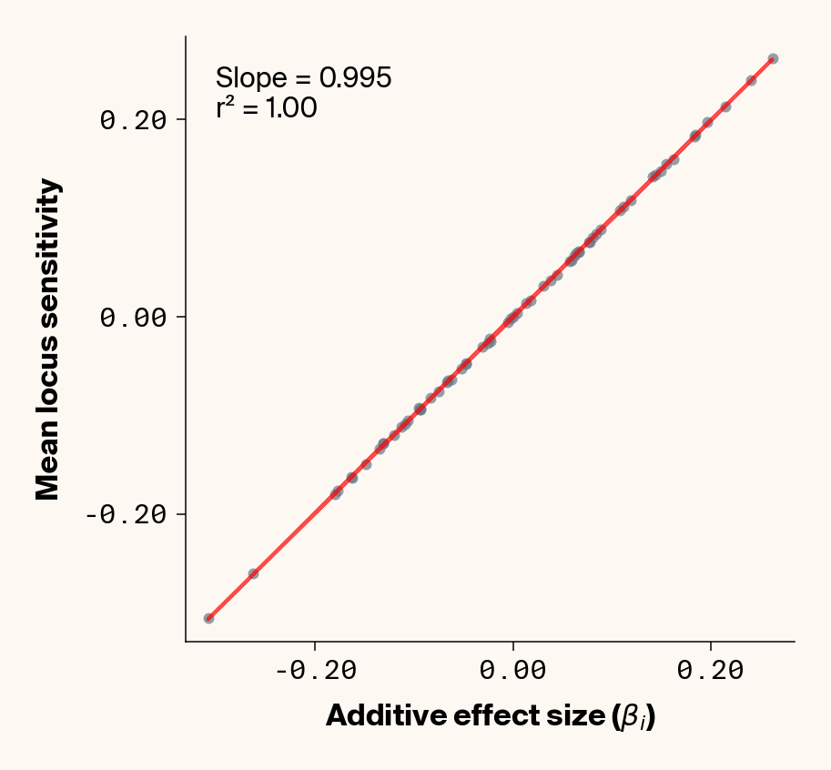
(a) Phenotype 1
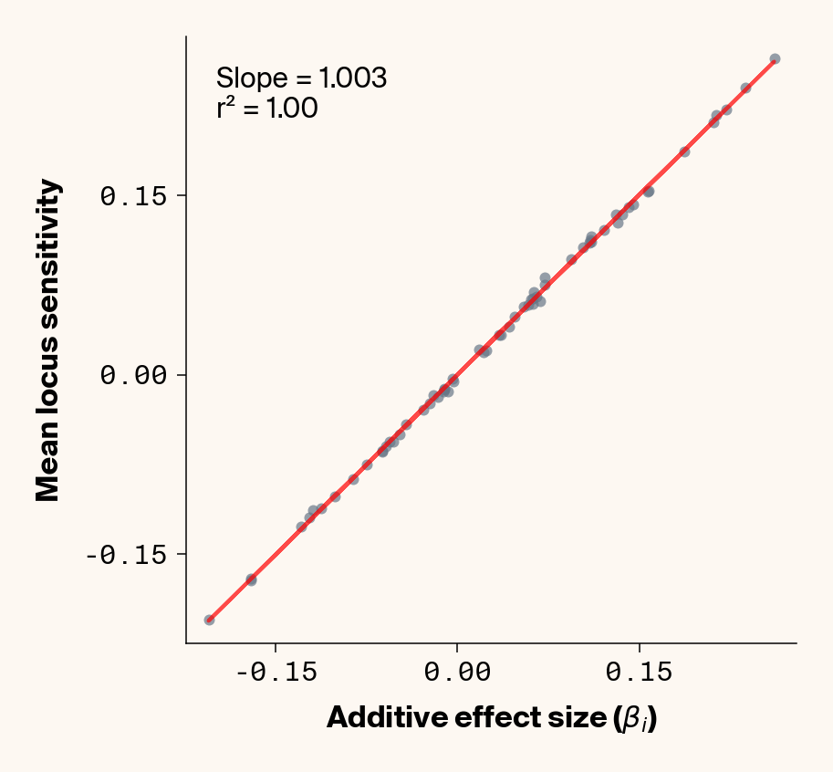
(b) Phenotype 2
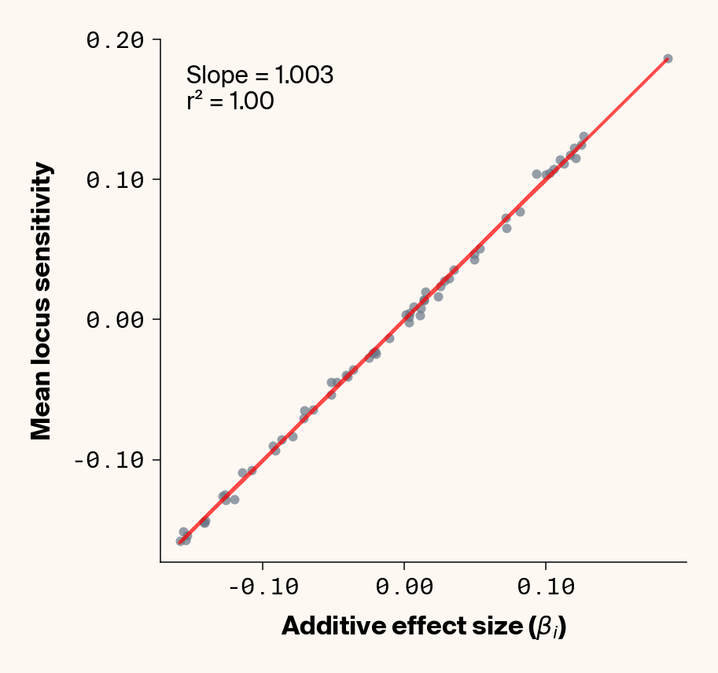
(c) Phenotype 3
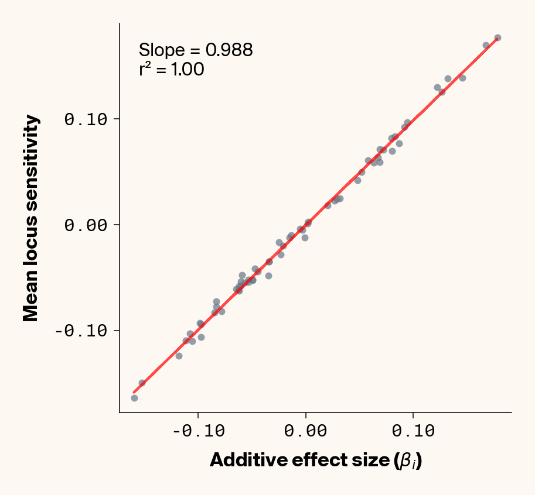
(d) Phenotype 4
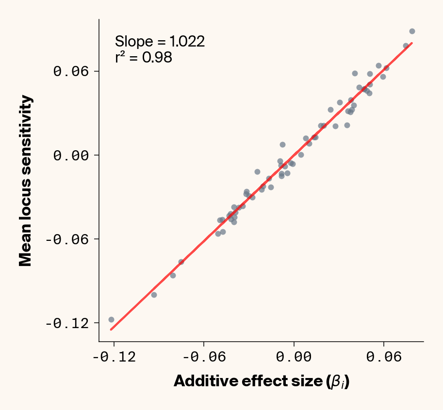
(e) Phenotype 5
Figure 2: Ground truth locus additive effect size plotted against mean locus sensitivity value for test-set samples. Results presented for 5 phenotypes (a-e) ranging from purely additive (a) to almost purely epistatic (e).
The answer is a resounding yes for all phenotypes (Figure 2). While there’s a tiny bit of noise in the most epistatic phenotypes, mean locus sensitivity tracks true additive effect size extremely closely in all cases, suggesting that the ELM decomposition of our MLP is backing out the underlying (additive) quantitative genetic framework used to simulate this data.
Estimating total epistatic effects
So we can back out additive effect sizes. This is a good start, but could just as easily be achieved by fitting a linear model to this data. What’s more exciting is the possibility of extracting nonlinear locus interactions from our model. As a first pass at this, we can start thinking beyond the mean and calculate the variance in locus sensitivity across test-set individuals. Our baseline expectation for the variance of locus sensitivity is as follows
The variance in locus sensitivity should depend on the square of the epistatic effect (a consequence of a constant in a variance term) along with allele frequencies at any interacting locus. Again, in our simple case of 0.5 allele frequencies (i.e., \(p_j = q_j\)), this equation simplifies to just the square of \(\beta_{ij}\). Intuitively, this expression makes sense: a locus whose effect isn’t dependent on genetic background should be invariant in estimated effect across individuals, while a locus that interacts with other alleles should vary in effect more strongly the stronger those interactions are. Does this match our data?
Estimate variance in locus sensitivity
def plot_sensitivity_variance_vs_epistasis(importance_dfs, true_effects_df, phenotype_idx=None):""" Plot the variance in locus sensitivity across samples versus epistatic effects, with a quadratic fit curve and equation. Args: importance_dfs: List of DataFrames with importance values, one per phenotype true_effects_df: DataFrame containing ground truth effects phenotype_idx: List of indexes of phenotypes to analyze (1-based, default: [1] for first phenotype) Returns: None """# default analyze first phenotypeif phenotype_idx isNone: phenotype_idx = [1]# Create individual plots for each phenotypefor i, idx inenumerate(phenotype_idx):with mpl.rc_context(plot_style): plt.figure(figsize=(6, 6))# Get the dataframe for this phenotypeifisinstance(importance_dfs, list): importance_df = importance_dfs[i]else: importance_df = importance_dfs[idx]# Calculate variance for each locus locus_variance = importance_df.var().values# Extract ground truth for the specific phenotype (idx is already 1-based) true_effects = true_effects_df[true_effects_df["trait"] == idx]# Extract epistatic effects epistatic_effects = true_effects["epi_eff"].values epistatic_effects = epistatic_effects * np.sqrt(heritability)# Create scatter plot plt.scatter(epistatic_effects, locus_variance, alpha=0.7, color=apc.steel)# Fit quadratic curve (y = ax² + bx + c) to epistatic phenotypesiflen(epistatic_effects) >2and np.std(epistatic_effects) >1e-6:# Polynomial fit (degree 2 for quadratic) c, b, a = polyfit(epistatic_effects, locus_variance, 2)# Generate points for the fit curve x_fit = np.linspace(min(epistatic_effects), max(epistatic_effects), 100) y_fit = a * x_fit**2+ b * x_fit + c# Plot the fit curve plt.plot(x_fit, y_fit, "r-", linewidth=2)# Add the equation to the plot equation =f"y = {a:.2f}x² + ..."# Calculate R-squared y_pred = a * np.array(epistatic_effects) **2+ b * np.array(epistatic_effects) + c ss_total = np.sum((locus_variance - np.mean(locus_variance)) **2) ss_residual = np.sum((locus_variance - y_pred) **2) r_squared =1- (ss_residual / ss_total)# Add equation and R² to the plot plt.text(0.1,0.95,f"{equation}\nr² = {r_squared:.2f}", transform=plt.gca().transAxes, fontsize=15, verticalalignment="top", bbox=dict( boxstyle="round", facecolor=apc.parchment, alpha=0.7, edgecolor="none" ), )# Add labels and title plt.xlabel(r"Epistatic Effect Size ($\beta_{ij}$)", fontsize=16) plt.ylabel("Locus Sensitivity Variance", fontsize=16)# Get current axes for formatting ax = plt.gca() ax.xaxis.set_major_locator(MaxNLocator(4)) ax.yaxis.set_major_locator(MaxNLocator(4))# ax.xaxis.set_major_formatter(FormatStrFormatter("%.2f"))# ax.yaxis.set_major_formatter(FormatStrFormatter("%.2f")) ax.yaxis.set_major_formatter(ScalarFormatter(useOffset=False)) ax.xaxis.set_major_formatter(ScalarFormatter(useOffset=False)) ax.set_aspect("auto") plt.tight_layout(pad=0.5) apc.mpl.style_plot(monospaced_axes="both") plt.show()plot_sensitivity_variance_vs_epistasis(importance_results, true_eff, phenotype_idx=[1, 2, 3, 4, 5])
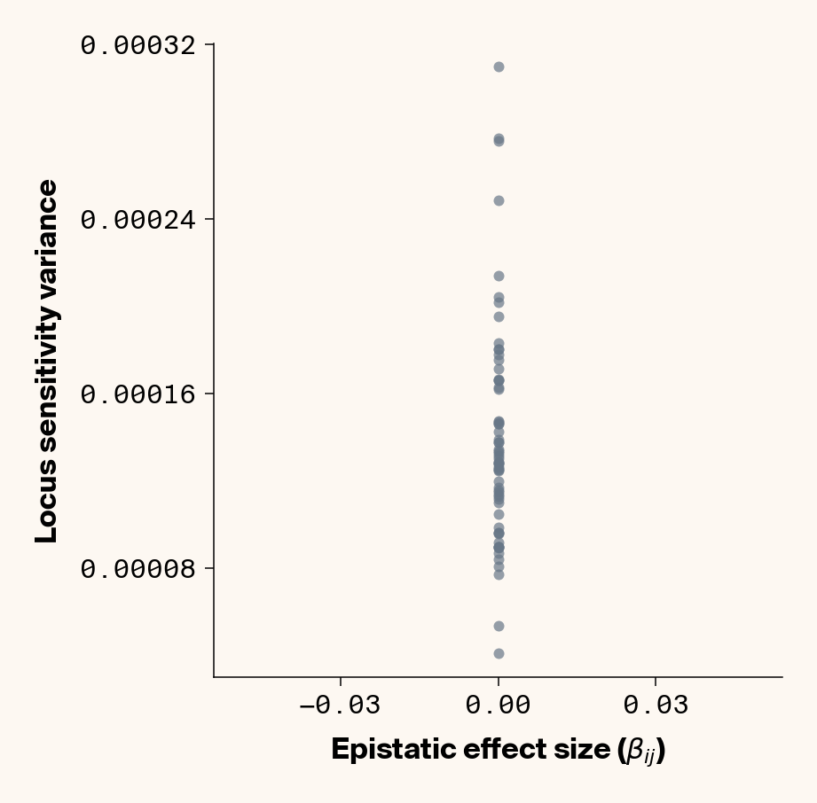
(a) Phenotype 1
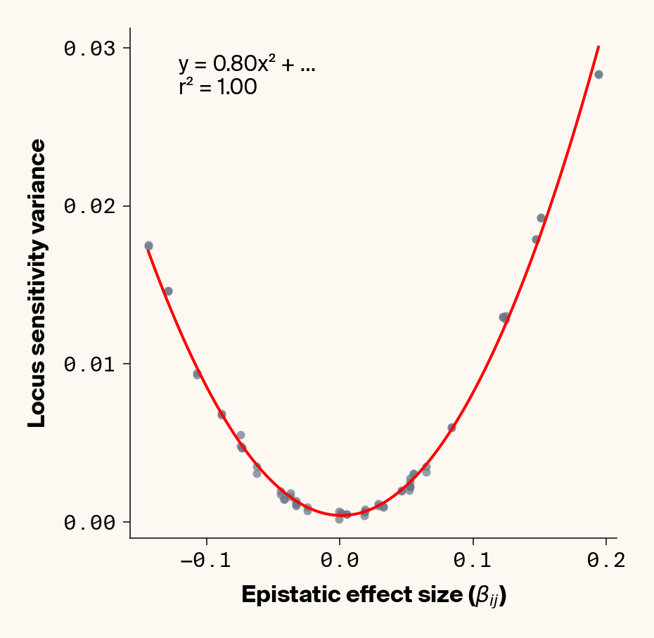
(b) Phenotype 2
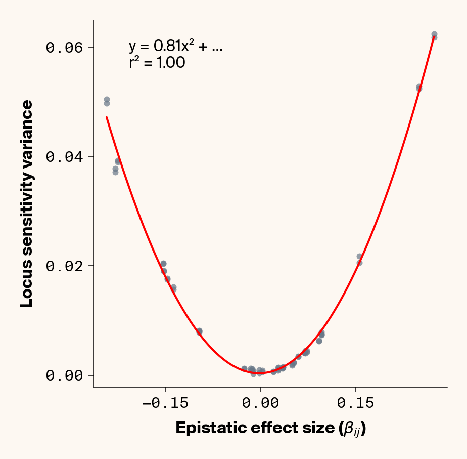
(c) Phenotype 3
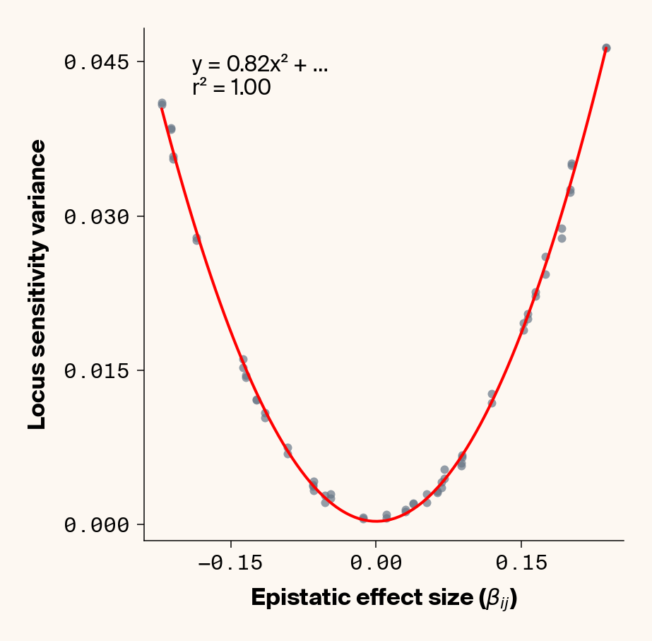
(d) Phenotype 4
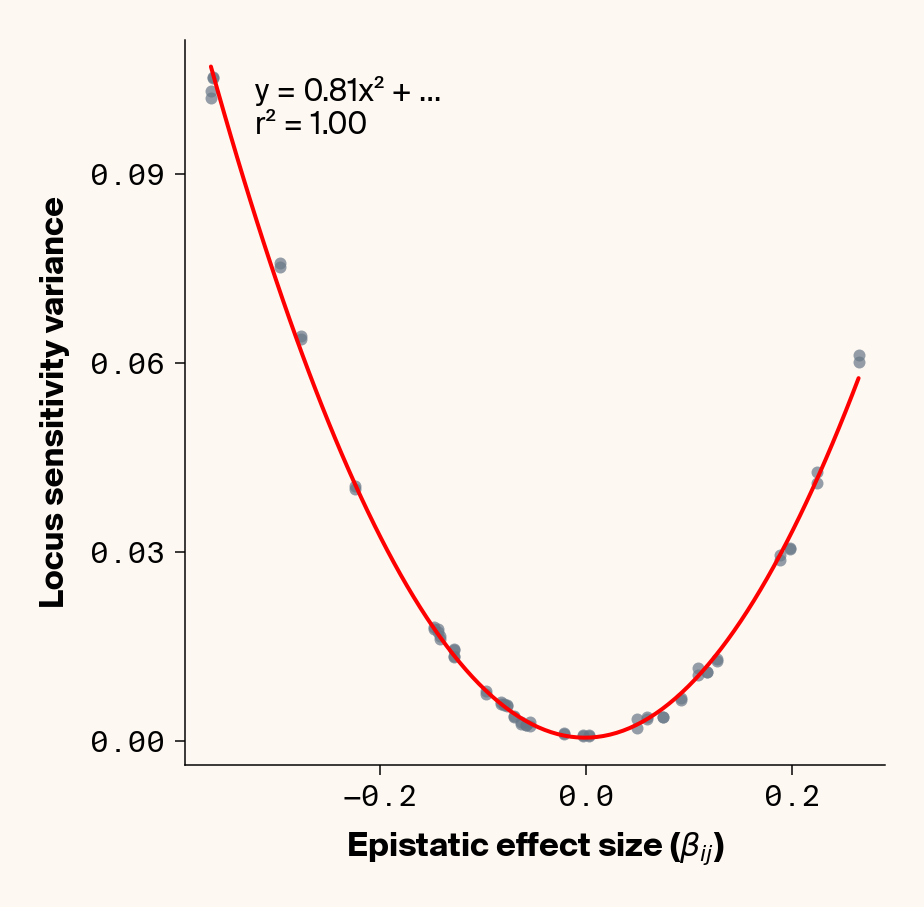
(e) Phenotype 5
Figure 3: Ground truth locus epistatic effect size plotted against variance in locus sensitivity value for test-set samples. Results presented for 5 phenotypes (a-e) ranging from purely additive (a) to almost purely epistatic (e).
Again, we recover a very clean relationship between ground truth epistatic effect size for each locus and the variance in locus sensitivity, except for phenotype 1, where there is no epistasis (Figure 3). This is a particularly useful result as it allows us to identify candidate epistatic loci without testing anything about the identity of their interactors, which normally requires performing laborious pairwise (or higher order) perturbation analyses. By selecting a subset of loci based on their individual sensitivity variances, we can perform post-hoc feature selection and limit more expensive analyses to a more promising subset of loci.
If you look closely at the fit of the parabola, you’ll notice that the quadratic term is scaled by a factor of 0.8, an underestimate of what should be a 1:1 relationship. We’ll see this moderate underestimate of the interaction effect size again later on, so keep this in mind.
Inferring pairwise epistatic interactions
Looking at the variance in locus sensitivity tells us which loci we expect to be participating in epistatic interactions generally. But what about inferring which combinations of loci actually specifically interact with each other? As a first pass at this, we can think about pairwise epistasis by considering pairs of locus sensitivity values conditioned on specific allelic combinations. In our two-locus haploid system, each locus can take on allelic values of -1/1, resulting in four possible genotypic combinations (1/1, 1/-1, -1/1, -1/-1). The equations below shows the expected sensitivity values of each of two interacting loci (\(x_i\) and \(x_j\)) for these four genotypes based on substituting the relevant genotypic values into Equation 2.
Notice that the locus sensitivity value for locus \(x_i\) depends on the allelic state at locus \(x_j\) and vice versa, assuming that \(\beta_{ij}\) is a non-zero term (i.e., the two loci genuinely interact). Below is a graphical representation of how we expect the sensitivity values of a pair of loci to change as a function of the strength of epistasis between them.
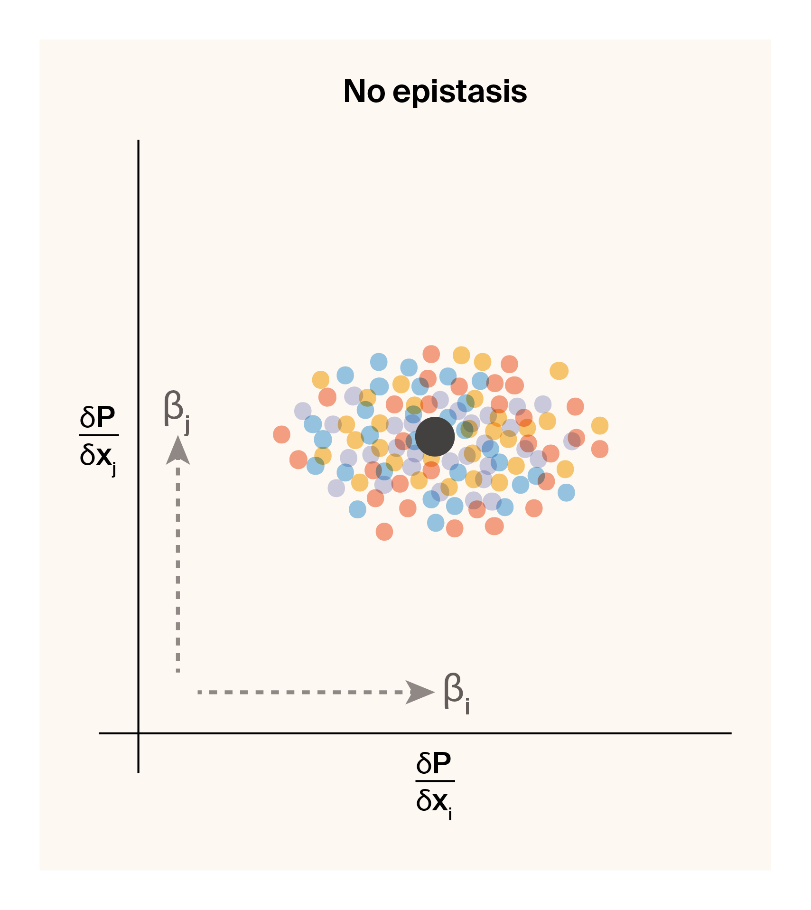
(a) Locus sensitivities for a pair of loci with no epistatic interactions.
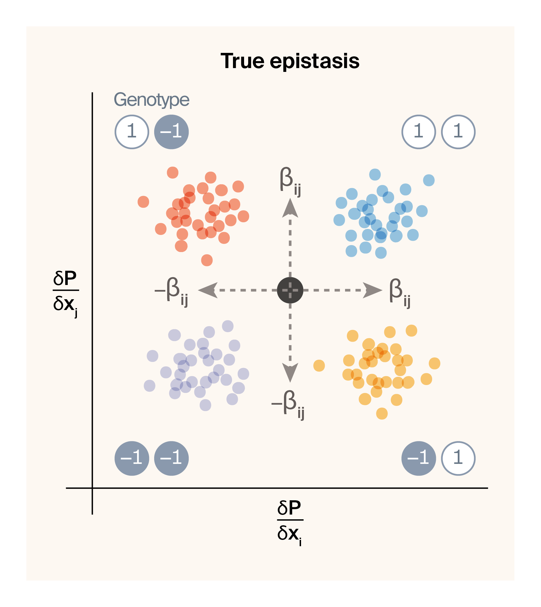
(b) Locus sensitivities for a pair of loci that epistatically interact with each other.
Figure 4: Graphical illustration of expected locus sensitivity patterns for a pair of loci conditioned on genotypic state.
If neither locus interacts epistatically at all, we should observe a single locus sensitivity for \(x_i\) and \(x_j\) for all genotypes centered on the additive effect of both loci (Figure 4 (a)). If we introduce an epistatic interaction between the pair, the four genotypes will be pushed to four opposing corners of locus sensitivity space (Figure 4 (b)). This leaves us with a simple prediction. If two loci epistatically interact, we should be able to capture and quantify this interaction term by plotting their locus sensitivity values and observing four masses of points that correspond to the four genotypic combinations. As a proof of concept, we can check this by visualizing genotype-specific locus sensitivities for a few epistatic pairs of loci for phenotype 2.
Plot sensitivity values for epistatically interacting pairs
def extract_top_epistatic_pairs( model, validation_loader, true_effects_df, top_n=10, phenotype_idx=None, device="cuda", max_samples=1000,):""" Extract the top N strongest epistatic pairs for each phenotype and plot them. Assumes genotype encoding is 1/-1. Args: model: Trained neural network model validation_loader: DataLoader for validation data true_effects_df: DataFrame containing ground truth effects (must have epi_eff column) top_n: Number of top epistatic pairs to extract per phenotype phenotype_idx: List of phenotype indices to analyze (1-based, None for all phenotypes) device: Device to run calculations on max_samples: Maximum number of samples to process """# Ensure required columns exist required_cols = ["trait", "locus", "epi_loc", "epi_eff"]ifnotall(col in true_effects_df.columns for col in required_cols):raiseValueError(f"true_effects_df must have these columns: {required_cols}")# Determine phenotype indices to analyzeif phenotype_idx isNone: all_traits = true_effects_df["trait"].unique() phenotype_idx =list(all_traits) # Keep 1-based indexingelifisinstance(phenotype_idx, int): phenotype_idx = [phenotype_idx]print(f"Analyzing phenotype: {phenotype_idx}")def get_phenotype_importance(x, pheno_idx):def phenotype_fn(inp):return model(inp)[:, pheno_idx -1] # Convert 1-based to 0-based jacobian = torch.autograd.functional.jacobian(phenotype_fn, x, vectorize=True).squeeze()return jacobian# Find top N epistatic pairs for each phenotype top_pairs = {}for idx in phenotype_idx: pheno_effects = true_effects_df[true_effects_df["trait"] == idx] # idx is already 1-based pheno_effects = pheno_effects[pheno_effects["epi_eff"] !=0] pheno_effects["abs_epi_eff"] = np.abs(pheno_effects["epi_eff"])# Sort by largest absolute effects first sorted_effects = pheno_effects.sort_values("abs_epi_eff", ascending=False) unique_pairs =set() pairs = []for _, row in sorted_effects.iterrows(): locus1 =int(row["locus"]) -1if row["locus"] >=1elseint(row["locus"]) locus2 =int(row["epi_loc"]) -1if row["epi_loc"] >=1elseint(row["epi_loc"]) pair_key =tuple(sorted([locus1, locus2]))if pair_key in unique_pairs:continue unique_pairs.add(pair_key) pairs.append( {"locus1": locus1,"locus2": locus2,"epi_eff": row["epi_eff"],"abs_epi_eff": row["abs_epi_eff"], } )iflen(pairs) >= top_n:break top_pairs[idx] = pairsprint(f"Selected {len(pairs)} top epistatic pairs for phenotype {idx}")# Process validation samples results = {} sample_count =0with torch.no_grad():for _batch_idx, (_, gens) inenumerate(validation_loader):for i inrange(gens.shape[0]):if max_samples isnotNoneand sample_count >= max_samples:break single_gens = gens[i : i +1] flattened_gens = single_gens.reshape(single_gens.shape[0], -1) simplified_gens = flattened_gens[:, 1::2].to(device) genotype = simplified_gens.cpu().numpy().squeeze()for idx in phenotype_idx: importance = get_phenotype_importance(simplified_gens, idx) importance_np = importance.cpu().numpy()for pair in top_pairs[idx]: locus1, locus2 = pair["locus1"], pair["locus2"] pair_key = (idx, locus1, locus2)if pair_key notin results: results[pair_key] = {"locus1_sensitivities": [],"locus2_sensitivities": [],"genotype1_values": [],"genotype2_values": [],"epi_eff": pair["epi_eff"], } results[pair_key]["locus1_sensitivities"].append(importance_np[locus1]) results[pair_key]["locus2_sensitivities"].append(importance_np[locus2]) results[pair_key]["genotype1_values"].append(genotype[locus1]) results[pair_key]["genotype2_values"].append(genotype[locus2]) sample_count +=1if sample_count %1000==0:print(f"Processed {sample_count} samples")if max_samples isnotNoneand sample_count >= max_samples:breakprint(f"Completed analysis for {sample_count} samples")# Convert lists to arraysfor key in results:for array_key in ["locus1_sensitivities","locus2_sensitivities","genotype1_values","genotype2_values", ]: results[key][array_key] = np.array(results[key][array_key])# Create plots max_pairs =max(len(pairs) for pairs in top_pairs.values()) if top_pairs else0if max_pairs ==0:print("No pairs to plot.")return# Calculate grid dimensions n_cols =min(3, max_pairs) n_rows_per_pheno = (max_pairs + n_cols -1) // n_cols total_rows =len(phenotype_idx) * n_rows_per_phenowith mpl.rc_context(plot_style): fig, axes = plt.subplots(total_rows, n_cols, figsize=(12, 4))if total_rows ==1and n_cols ==1: axes = np.array([[axes]])elif total_rows ==1: axes = axes.reshape(1, -1)elif n_cols ==1: axes = axes.reshape(-1, 1) plot_idx =0for _, idx inenumerate(phenotype_idx):for _, pair inenumerate(top_pairs[idx]): row = plot_idx // n_cols col = plot_idx % n_cols ax = axes[row, col] locus1, locus2 = pair["locus1"], pair["locus2"] pair_key = (idx, locus1, locus2)if pair_key notin results:continue pair_data = results[pair_key] locus1_sens = pair_data["locus1_sensitivities"] locus2_sens = pair_data["locus2_sensitivities"] geno1_vals = pair_data["genotype1_values"] geno2_vals = pair_data["genotype2_values"]# Create scatter plot with different colors for genotype combinations colors = [apc.wish, apc.canary, apc.amber, apc.vital] labels = ["-1/-1", "-1/1", "1/-1", "1/1"]for k, (g1, g2) inenumerate([(-1, -1), (-1, 1), (1, -1), (1, 1)]): mask = (geno1_vals == g1) & (geno2_vals == g2)if np.any(mask): ax.scatter( locus1_sens[mask], locus2_sens[mask], c=colors[k], label=labels[k], alpha=0.7, ) ax.set_xlabel(f"Locus {locus1} Sensitivity", fontsize=13) ax.set_ylabel(f"Locus {locus2} Sensitivity", fontsize=13) ax.set_title(rf"Loci {locus1}/{locus2}, $\beta_{{ij}}$= {pair['epi_eff']:.2f}", fontsize=15 )if plot_idx ==0: handles, labels_list = ax.get_legend_handles_labels() ax.xaxis.set_major_locator(MaxNLocator(4)) ax.yaxis.set_major_locator(MaxNLocator(4)) ax.xaxis.set_major_formatter(FormatStrFormatter("%.2f")) ax.yaxis.set_major_formatter(FormatStrFormatter("%.2f")) plt.sca(ax) apc.mpl.style_plot(monospaced_axes="both") plot_idx +=1# Hide empty subplots total_plots_needed =sum(len(pairs) for pairs in top_pairs.values())for plot_idx inrange(total_plots_needed, total_rows * n_cols): row = plot_idx // n_cols col = plot_idx % n_colsif row < axes.shape[0] and col < axes.shape[1]: axes[row, col].set_visible(False)# Add single legend in the margin (outside all subplots) fig.legend( handles, labels_list, title="Genotypes", loc="center left", bbox_to_anchor=(1.0, 0.5), fontsize=13, title_fontsize=14, frameon=False, )# Make title bold legend = fig.legends[-1] legend.get_title().set_fontweight("bold") plt.tight_layout() plt.show()extract_top_epistatic_pairs( model, test_loader_gp, true_eff, top_n=3, phenotype_idx=[2], device=device, max_samples=2000)
Analyzing phenotype: [2]
Selected 3 top epistatic pairs for phenotype 2
Processed 1000 samples
Completed analysis for 1500 samples
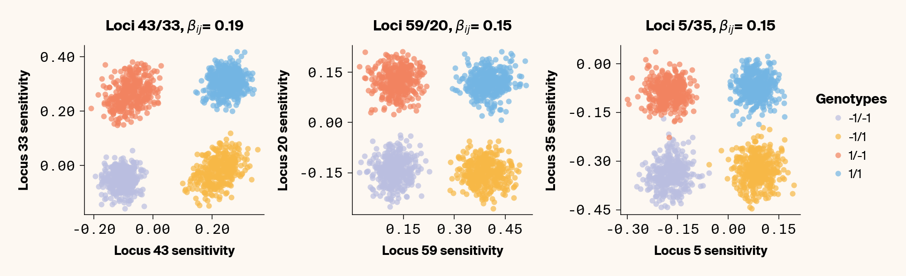
Figure 5: Locus sensitivity values plotted for three pairs of epistatically interacting loci, labelled by genotypic state.
As expected, we get four clusters of points which cleanly correspond to the four genotypes (Figure 5). The exact configuration of the square made by the genotype locus sensitivities depends on the sign of the epistatic and additive terms. We noticed that at times, the expected square of point masses manifests as a parallelogram. We haven’t quite been able to figure out why the shape seems to wobble in this way, but it may have to do with some kind of regularization.
Our results imply that we should be able to back out \(\beta_{ij}\) directly by examining the genotype-specific locus sensitivity values. Specifically, by iterating over all combinations of \(x_i\) and \(x_j\) and summing them in a way to knock out the \(\beta_i\) terms, we can estimate \(\beta_{ij}\) as follows:
In fact, we should be able to do this for both the genotype-specific locus sensitivity values of locus \(x_i\) and locus \(x_j\) and get roughly the same estimate of \(\beta_{ij}\). We can test this out for the full set of simulated loci in our dataset, since we have only 64 positions (and 2016 possible unique pairs). First, for every possible pairing of loci, we calculate a mean locus sensitivity value for each of the four genotypes for both \(x_i\) and \(x_j\). Next, we combine these means as in the sum above to obtain \(-4\beta_{ij}\). Finally, we take the average of \(\beta_{ij}\) as calculated from \(\frac{\partial P}{\partial x_i}\) and \(\frac{\partial P}{\partial x_j}\). Does this match epistatic effects from our simulations?
Estimate genotype-specific mean sensitivities for all pairs of loci
# expect a minute or so runtime for this functiondef extract_all_epistatic_pairs( model, validation_loader, true_effects_df, phenotype_idx=None, device=device, verbose=True, max_samples=1000,):""" Extract sensitivities for all possible unique pairs of loci for each phenotype. For pairs with known epistatic effects in true_effects_df, include those effects. For pairs without known epistatic effects, set the effect to 0. Uses 1-based locus indexing throughout. Args: model: Trained neural network model validation_loader: DataLoader for validation data true_effects_df: DataFrame containing ground truth effects with columns: trait (1-based phenotype), locus (1-based), add_eff, epi_loc (1-based interacting locus), epi_eff phenotype_idx: List of phenotype indices to analyze (None for all phenotypes) device: Device to run calculations on max_samples: Maximum number of samples to process Returns: DataFrame with one row per phenotype/genotype/locus pair """# Ensure true_effects_df has required columns required_cols = ["trait", "locus", "epi_loc", "epi_eff"]ifnotall(col in true_effects_df.columns for col in required_cols):raiseValueError(f"true_effects_df must have these columns: {required_cols}")# Check for additive effects columnsif"add_eff"in true_effects_df.columns: add_eff_col ="add_eff"# Determine phenotype indices to analyzeif phenotype_idx isNone:# Get all unique phenotypes from true_effects_df all_traits = true_effects_df["trait"].unique()# Use 1-based indexing for phenotypes phenotype_idx =list(all_traits)elifisinstance(phenotype_idx, int): phenotype_idx = [phenotype_idx]if verbose:print(f"Analyzing phenotypes: {phenotype_idx}")# Function to get importance for a specific phenotypedef get_phenotype_importance(x, pheno_idx):# Adjust for 1-based phenotype indexing model_pheno_idx = pheno_idx -1# Convert 1-based to 0-based for the modeldef phenotype_fn(inp):return model(inp)[:, model_pheno_idx]# Calculate Jacobian jacobian = torch.autograd.functional.jacobian(phenotype_fn, x, vectorize=True).squeeze()# Return unmodified Jacobian valuereturn jacobian# Get number of loci from the model n_loci_model = n_loci # This should be defined in your environment or passed to the function# Create mapping of known epistatic effects epistatic_effects = {} additive_effects = {}# First, collect all additive effectsfor idx in phenotype_idx: additive_effects[idx] = {} pheno_effects = true_effects_df[true_effects_df["trait"] == idx]if add_eff_col isnotNone:# Get unique loci and their additive effectsfor _, row in pheno_effects.drop_duplicates("locus").iterrows(): locus =int(row["locus"]) add_eff = row[add_eff_col] additive_effects[idx][locus] = add_eff# Now collect all epistatic effectsfor idx in phenotype_idx: epistatic_effects[idx] = {} pheno_effects = true_effects_df[true_effects_df["trait"] == idx]# Process each row to extract epistatic effectsfor _, row in pheno_effects.iterrows(): locus1 =int(row["locus"]) locus2 =int(row["epi_loc"])# Create a canonical representation of the pair (smaller locus first) pair_key =tuple(sorted([locus1, locus2]))# Store the epistatic effect epistatic_effects[idx][pair_key] = row["epi_eff"]# Generate all possible locus pairs all_pairs = {}for idx in phenotype_idx: pairs = []# Generate all possible pairs of loci (using 1-based indexing)for locus1 inrange(1, n_loci_model +1): # Start from 1, not 0for locus2 inrange(locus1 +1, n_loci_model +1): # Only use each pair once# Create canonical pair key pair_key = (locus1, locus2)# Get epistatic effect if it exists, otherwise use 0 epi_eff = epistatic_effects[idx].get(pair_key, 0.0) abs_epi_eff =abs(epi_eff)# Get additive effects add_eff1 = additive_effects[idx].get(locus1, 0.0) add_eff2 = additive_effects[idx].get(locus2, 0.0)# Store pair info pairs.append( {"locus1": locus1,"locus2": locus2,"epi_eff": epi_eff,"abs_epi_eff": abs_epi_eff,"add_eff1": add_eff1,"add_eff2": add_eff2,"has_epistasis": epi_eff !=0.0, } ) all_pairs[idx] = pairs epistatic_count =sum(1for p in pairs if p["has_epistasis"])if verbose:print(f"Generated {len(pairs)} total locus pairs for phenotype {idx}, {epistatic_count} with known epistatic effects" )# Process validation samples to get sensitivities and genotypes sample_indices = [] genotypes_dict = {} sensitivities_dict = defaultdict(lambda: defaultdict(list))# Process validation samples sample_count =0with torch.no_grad():for _batch_idx, (_, gens) inenumerate(validation_loader):# Process each sample in the batchfor i inrange(gens.shape[0]):# Check if we've reached the maximum samplesif max_samples isnotNoneand sample_count >= max_samples:break# Store sample index sample_indices.append(sample_count)# Get single sample single_gens = gens[i : i +1]# Flatten and simplify (remove one-hot encoding) flattened_gens = single_gens.reshape(single_gens.shape[0], -1) simplified_gens = flattened_gens[:, 1::2].to(device)# Store the raw genotype data genotype = simplified_gens.cpu().numpy().squeeze() genotypes_dict[sample_count] = genotype# Calculate importance for each phenotypefor idx in phenotype_idx: importance = get_phenotype_importance(simplified_gens, idx) importance_np = importance.cpu().numpy()# Store sensitivity values for each locus in all pairsfor pair in all_pairs[idx]: locus1 = pair["locus1"] locus2 = pair["locus2"] pair_key = (idx, locus1, locus2)# Convert from 1-based to 0-based for accessing the importance array model_locus1 = locus1 -1 model_locus2 = locus2 -1# Store sensitivity values sensitivities_dict[pair_key]["locus1"].append(importance_np[model_locus1]) sensitivities_dict[pair_key]["locus2"].append(importance_np[model_locus2]) sample_count +=1# Print progressif sample_count %1000==0and verbose:print(f"Processed {sample_count} samples")# Check again after batchif max_samples isnotNoneand sample_count >= max_samples:break# Prepare final results summary_rows = [] # For the summarized DataFrame# Get phenotype names (trait names) if available trait_names = {}if"trait_name"in true_effects_df.columns:for _, row in true_effects_df.drop_duplicates("trait").iterrows(): trait_names[row["trait"]] = row["trait_name"] # Keep 1-based indexingfor idx in phenotype_idx:# Get phenotype name if available, otherwise use index phenotype_name = trait_names.get(idx, f"Phenotype_{idx}")for pair in all_pairs[idx]: locus1 = pair["locus1"] locus2 = pair["locus2"] pair_key = (idx, locus1, locus2)# Get sensitivity values locus1_sensitivities = np.array(sensitivities_dict[pair_key]["locus1"]) locus2_sensitivities = np.array(sensitivities_dict[pair_key]["locus2"])# Get genotypes for this pair genotype1_values = [] genotype2_values = [] combined_genotypes = []for s_idx in sample_indices: genotype = genotypes_dict[s_idx]# Convert from 1-based to 0-based for accessing genotype array model_locus1 = locus1 -1 model_locus2 = locus2 -1# Extract genotype values for the two loci geno1 = genotype[model_locus1] geno2 = genotype[model_locus2]# Store individual genotypes genotype1_values.append(geno1) genotype2_values.append(geno2)# Encode combined genotype for -1/1 encoding# Map (-1,-1) → 0, (-1,1) → 1, (1,-1) → 2, (1,1) → 3 combined = ((geno1 +1) //2) *2+ ((geno2 +1) //2) combined_genotypes.append(combined)# Convert to numpy arrays genotype1_values = np.array(genotype1_values) genotype2_values = np.array(genotype2_values) combined_genotypes = np.array(combined_genotypes)# Calculate mean sensitivity values for each genotype combinationfor geno1 in [-1, 1]:for geno2 in [-1, 1]:# Create mask for this genotype combination mask = (genotype1_values == geno1) & (genotype2_values == geno2)if np.any(mask):# Get mean sensitivities for this genotype combination mean_sens1 = np.mean(locus1_sensitivities[mask]) mean_sens2 = np.mean(locus2_sensitivities[mask]) count = np.sum(mask)# Create a row for the summary DataFrame summary_rows.append( {"phenotype": phenotype_name,"phenotype_idx": idx,"locus1": locus1,"locus2": locus2,"genotype1": geno1,"genotype2": geno2,"add_eff1": pair["add_eff1"],"add_eff2": pair["add_eff2"],"epi_eff": pair["epi_eff"],"abs_epi_eff": pair["abs_epi_eff"],"mean_sens1": mean_sens1,"mean_sens2": mean_sens2,"count": count,"has_epistasis": pair["has_epistasis"], } )# Create the summary DataFrame summary_df = pd.DataFrame(summary_rows)# Add some useful calculated columnsiflen(summary_df) >0:# Calculate covariance between locus1 and locus2 sensitivities for each pairfor idx in phenotype_idx:for pair in all_pairs[idx]: locus1 = pair["locus1"] locus2 = pair["locus2"] pair_key = (idx, locus1, locus2)if pair_key in sensitivities_dict:# Update all rows for this pair mask = ( (summary_df["phenotype_idx"] == idx)& (summary_df["locus1"] == locus1)& (summary_df["locus2"] == locus2) )# Add combined genotype column for convenience summary_df["genotype_combined"] = summary_df["genotype1"].astype(str) + summary_df["genotype2" ].astype(str)# Calculate weighted means across genotypes# Create unique pair identifiers summary_df["pair_id"] = ( summary_df["phenotype_idx"].astype(str)+"_"+ summary_df["locus1"].astype(str)+"_"+ summary_df["locus2"].astype(str) )# Add weighted mean sensitivities weighted_means = summary_df.groupby("pair_id").apply(lambda x: pd.Series( {"weighted_mean_sens1": (x["mean_sens1"] * x["count"]).sum() / x["count"].sum(),"weighted_mean_sens2": (x["mean_sens2"] * x["count"]).sum() / x["count"].sum(),"total_samples": x["count"].sum(), } ), include_groups=False, )# Merge weighted means back to summary_df summary_df = summary_df.merge(weighted_means, on="pair_id")return summary_dfpaired_all = extract_all_epistatic_pairs( model, test_loader_gp, true_eff, phenotype_idx=[1, 2, 3, 4, 5], device=device, max_samples=2000)
Analyzing phenotypes: [1, 2, 3, 4, 5]
Generated 2016 total locus pairs for phenotype 1, 0 with known epistatic effects
Generated 2016 total locus pairs for phenotype 2, 32 with known epistatic effects
Generated 2016 total locus pairs for phenotype 3, 32 with known epistatic effects
Generated 2016 total locus pairs for phenotype 4, 32 with known epistatic effects
Generated 2016 total locus pairs for phenotype 5, 32 with known epistatic effects
Processed 1000 samples
Estimate epistatic effect sizes for all pairs of loci
# expect a minute or so runtime for this functiondef estimate_effects_from_sensitivities(summary_df, heritability=1.0, verbose=True):""" Estimate additive and epistatic effects from locus sensitivity means across genotype combinations. Works with either 0/1 or -1/1 genotype encoding. Applies appropriate sign corrections and heritability scaling. Args: summary_df: DataFrame output from extract_top_epistatic_pairs or extract_all_epistatic_pairs, containing mean sensitivity values for each locus/genotype combination heritability: The broad-sense heritability value used for the phenotype (default=1.0) Returns: DataFrame with estimated additive and epistatic effects for each locus pair, alongside true values for comparison """# Create unique identifier for each locus pair summary_df["pair_id"] = ( summary_df["phenotype_idx"].astype(str)+"_"+ summary_df["locus1"].astype(str)+"_"+ summary_df["locus2"].astype(str) )# Calculate heritability scaling factor h_sqrt = np.sqrt(heritability)if verbose:print(f"Using heritability scaling factor: {h_sqrt:.4f} (h² = {heritability:.2f})") encoding_type ="-1/1"# simulation ground truth genotype_mapping = {(-1, -1): "00", (-1, 1): "01", (1, -1): "10", (1, 1): "11"}# Initialize results list results = []# Process each unique locus pairfor pair_id in summary_df["pair_id"].unique():# Get data for this pair pair_data = summary_df[summary_df["pair_id"] == pair_id].copy()# Extract true effects (same for all rows of this pair) true_add_eff1 = pair_data["add_eff1"].iloc[0] true_add_eff2 = pair_data["add_eff2"].iloc[0] true_epi_eff = pair_data["epi_eff"].iloc[0] phenotype = pair_data["phenotype"].iloc[0] phenotype_idx = pair_data["phenotype_idx"].iloc[0] locus1 = pair_data["locus1"].iloc[0] locus2 = pair_data["locus2"].iloc[0]# Apply heritability scaling to true effects scaled_true_add_eff1 = true_add_eff1 * h_sqrt if true_add_eff1 isnotNoneelseNone scaled_true_add_eff2 = true_add_eff2 * h_sqrt if true_add_eff2 isnotNoneelseNone scaled_true_epi_eff = true_epi_eff * h_sqrt if true_epi_eff isnotNoneelseNone# Create dictionary to store sensitivity means by genotype sens1_by_genotype = {} sens2_by_genotype = {}# Fill dictionary with sensitivity means for each genotype combinationfor _, row in pair_data.iterrows(): geno1 = row["genotype1"] geno2 = row["genotype2"] genotype_key = genotype_mapping.get((geno1, geno2), f"{geno1}{geno2}") sens1_by_genotype[genotype_key] = row["mean_sens1"] sens2_by_genotype[genotype_key] = row["mean_sens2"]# Check if we have all four genotype combinations required_genotypes = ["00", "01", "10", "11"]ifnotall(g in sens1_by_genotype and g in sens2_by_genotype for g in required_genotypes):print(f"Skipping pair {pair_id} - missing genotype combinations")continue# 1. Estimate additive effects from mean sensitivity across all genotypes# For locus 1: a₁ = mean(s₁)/2 (removed negative sign) est_add_eff1 = np.mean([sens1_by_genotype[g] for g in required_genotypes]) /2# For locus 2: a₂ = mean(s₂)/2 (removed negative sign) est_add_eff2 = np.mean([sens2_by_genotype[g] for g in required_genotypes]) /2# 2. Estimate epistatic effect with sign correction# Method 1: From locus 1 sensitivities with sign correction epi_est1 = (-1* ( sens1_by_genotype["00"]- sens1_by_genotype["01"]+ sens1_by_genotype["10"]- sens1_by_genotype["11"] )/4 )# Method 2: From locus 2 sensitivities with sign correction epi_est2 = (-1* ( sens2_by_genotype["00"]- sens2_by_genotype["10"]+ sens2_by_genotype["01"]- sens2_by_genotype["11"] )/4 )# Average both estimates est_epi_eff = (epi_est1 + epi_est2) /2# 6. Store results results.append( {"phenotype": phenotype,"phenotype_idx": phenotype_idx,"locus1": locus1,"locus2": locus2,"pair_id": pair_id,# Original true effects"true_add_eff1": true_add_eff1,"true_add_eff2": true_add_eff2,"true_epi_eff": true_epi_eff,# Scaled true effects (adjusted for heritability)"scaled_true_add_eff1": scaled_true_add_eff1,"scaled_true_add_eff2": scaled_true_add_eff2,"scaled_true_epi_eff": scaled_true_epi_eff,# Estimated effects (already sign-corrected)"est_add_eff1": est_add_eff1,"est_add_eff2": est_add_eff2,"est_epi_eff": est_epi_eff,# Record heritability used"heritability": heritability,# Record encoding type"encoding_type": encoding_type, } )# Create results DataFrame results_df = pd.DataFrame(results)return results_dfqg_estimates = estimate_effects_from_sensitivities(paired_all, heritability=heritability)
Using heritability scaling factor: 1.0000 (h² = 1.00)
Plot epistatic effect size estimates vs. ground truth
def plot_epistatic_estimates(qg_estimates):""" Plot estimated vs true epistatic effects for each phenotype. Args: qg_estimates: DataFrame with columns 'phenotype', 'true_epi_eff', 'est_epi_eff' """ unique_phenotypes = qg_estimates["phenotype"].unique()for _, phenotype inenumerate(unique_phenotypes):with mpl.rc_context(plot_style): plt.figure(figsize=(6, 6))# Filter data for this phenotype phenotype_data = qg_estimates[qg_estimates["phenotype"] == phenotype]# Create scatter plot plt.scatter( phenotype_data["true_epi_eff"], phenotype_data["est_epi_eff"], alpha=0.7, color=apc.steel, )# Add best fit line and slope (skip for Phenotype_1 as in original)if phenotype !="Phenotype_1": z = np.polyfit(phenotype_data["true_epi_eff"], phenotype_data["est_epi_eff"], 1) p = np.poly1d(z) xlims = plt.xlim() x_smooth = np.linspace(xlims[0], xlims[1], 100) plt.plot(x_smooth, p(x_smooth), "r-", alpha=0.7, linewidth=2) slope = z[0] r2 = r2_score(phenotype_data["true_epi_eff"], phenotype_data["est_epi_eff"]) plt.text(0.05,0.95,f"Slope = {slope:.3f}\nr² = {r2:.2f}", transform=plt.gca().transAxes, verticalalignment="top", fontsize=15, bbox=dict( boxstyle="round", facecolor=apc.parchment, alpha=0.7, edgecolor="none" ), )# Add title and labels plt.xlabel("True Epistatic Effect", fontsize=16) plt.ylabel("Estimated Epistatic Effect", fontsize=16)# Get current axes for formatting ax = plt.gca() ax.xaxis.set_major_locator(MaxNLocator(4)) ax.yaxis.set_major_locator(MaxNLocator(4)) ax.xaxis.set_major_formatter(FormatStrFormatter("%.2f")) ax.yaxis.set_major_formatter(FormatStrFormatter("%.2f")) apc.mpl.style_plot(monospaced_axes="both") plt.show() plt.close()plot_epistatic_estimates(qg_estimates)
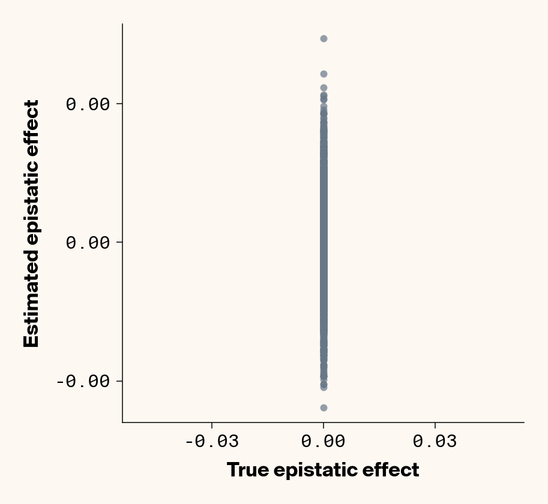
(a) Phenotype 1
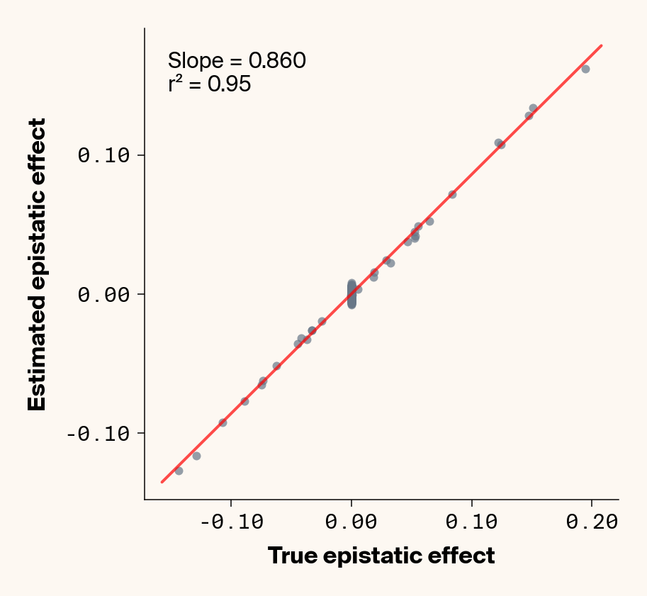
(b) Phenotype 2
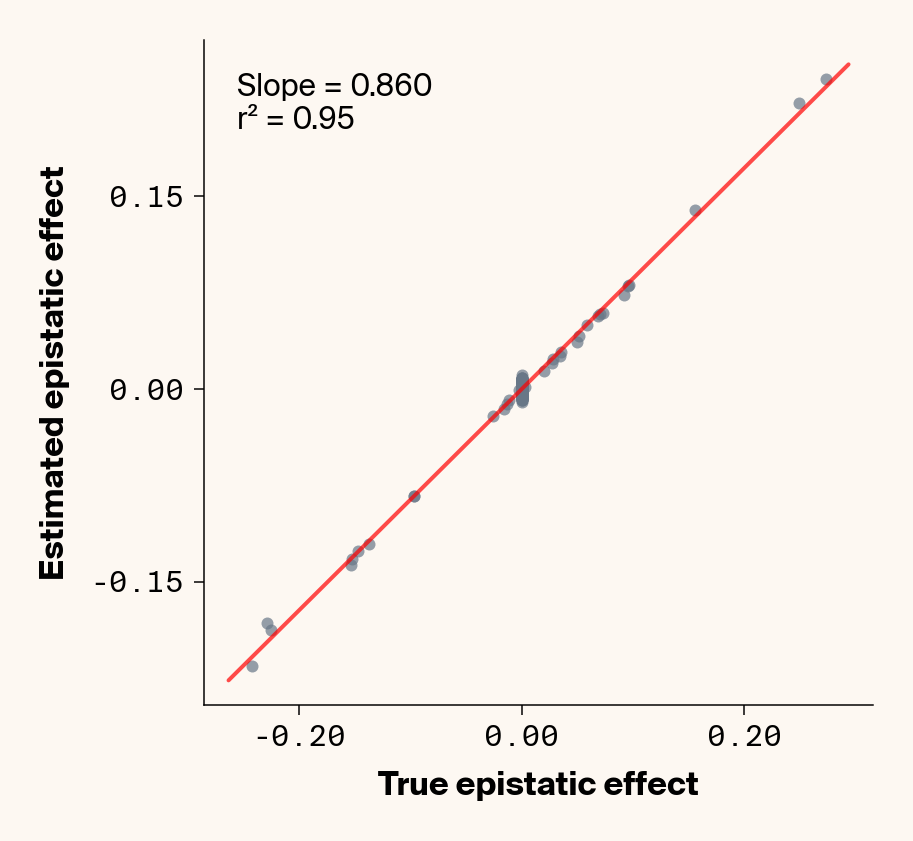
(c) Phenotype 3
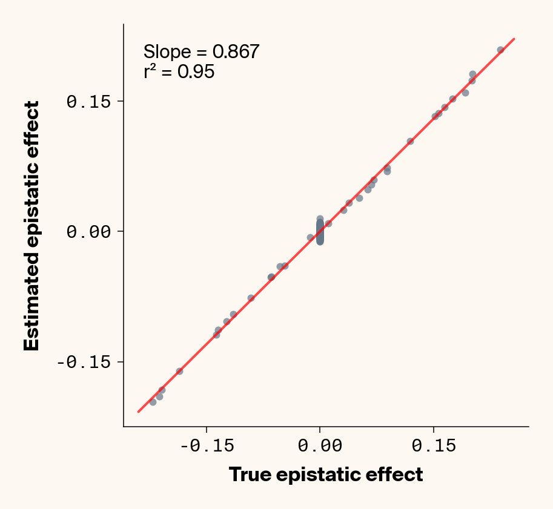
(d) Phenotype 4
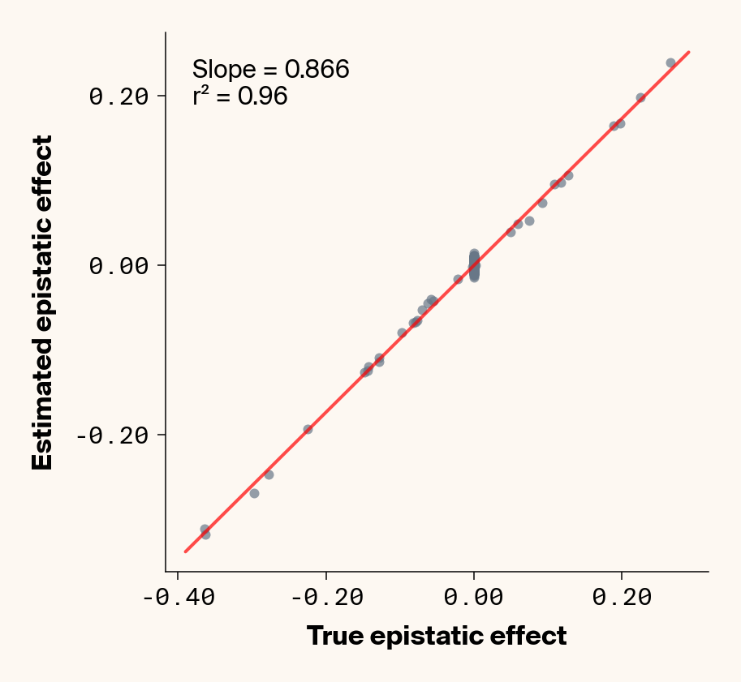
(e) Phenotype 5
Figure 6: Ground truth epistatic interaction terms plotted against epistatic terms estimated from paired genotype specific locus sensitivity shifts. Points shown for all possible pairs of loci. Locus pairs with no interaction have a ground truth epistatic term set to 0. Results presented for 5 phenotypes (a-e) ranging from purely additive (a) to almost purely epistatic (e).
Again, the answer is a strong yes (Figure 6). There’s very strong concordance in the estimated and ground truth epistatic effect sizes, even including the majority of false positive epistatic pairs (i.e., \(\beta_{ij} = 0\)). This implies that we have the ability to reconstruct the quantitative genetic parameters underlying our simulated data with very high accuracy, at least in this well-behaved simulated dataset.
Once more, it’s interesting to note that the relationship between estimated and ground-truth \(\beta_{ij}\) isn’t 1:1, but rather close to 0.86:1, a similar scaling we observed when we compared variance in locus sensitivity to epistatic effect size. This concordance is actually surprising, since the variance-based \(\beta_{ij}\) should scale with the square of the direct \(\beta_{ij}\) estimate. In other words, we should see a scaling of 0.86 for the direct \(\beta_{ij}\) estimate and ~0.74 for the variance-based estimate. One explanation for this discrepancy is that the direct \(\beta_{ij}\) estimate we derive here pertains to a specific pair of loci, while the variance-based \(\beta_{ij}\) estimate captures all epistatic variance associated with a focal locus. As a result, it probably captures the low levels of false-positive epistatic variance we observe here and might inflate the variance-based metric.
Either way, our analyses strongly suggest that second-order effects (pairwise epistasis) estimated from our model are biased downward to a stronger degree than first-order (additive) effects. We strongly suspect this is a product of regularization through the high weight decay parameter we used when training our MLP. Through initial experimentation, we found that adding weight decay gave us a final small boost in predictive performance and dropped the magnitude of false positive pairwise epistatic terms. But this likely comes at the relatively small cost of shrinking true parameter estimates (a trade-off also made with genomic prediction models like GBLUP). Perhaps the reason higher-order effects are regularized more strongly relates to the larger number of neurons that will have to be employed to capture such effects, resulting in stronger regularization under weight decay.
Discussion
We applied ELM to a simple genotype-phenotype neural network to test whether we could back out interpretable quantitative genetics parameters from a “black box” model. Our results turned out to be surprisingly interpretable. ELM allowed us to infer both additive and epistatic effects with high accuracy, demonstrating that our neural network had learned the underlying quantitative genetic model used to generate the data and that we could extract usable effect size information about it. We’re now moving to testing this approach in real-world biological datasets. Our hope is that ELM can allow us to harness some of the interpretability of simpler linear models, while taking advantage of the power of deep learning. For example, by fitting a neural network and subsequently filtering loci by their sensitivity variance we might be able to find evidence of epistatically interacting loci by only testing a small fraction of them, providing a substantial advantage compared to traditional GWAS approaches where all combinatorial tests for epistasis have to be performed and the model is fit to only a handful of loci at a time.
While our results look promising, there are several limitations to this study we’d like to highlight. The main limitation is that our simulated data have unrealistically low levels of noise, and we have many more genomes than interacting loci, conditions we previously identified as being suitable for exceptional neural network predictive performance. Few real-world biological datasets will ever provide such convenient conditions for mapping genotypes to phenotypes. However, we believe real-world limitations can be overcome. First, we supply an Appendix to this notebook where we test adding substantial amounts of environmental noise to the observed phenotypes and report that ELM still works surprisingly effectively even in regimes where overall predictive performance seems to suggest no epistatic variance has been learned. Second, we advocate for applying DL model training and ELM not to all possible loci in a given dataset, but to first perform feature selection to narrow down the input to a set of candidate loci from which a model is trained. Given this, we expect ELM might allow us to uncover more biological nonlinearity than would normally be revealed when fitting explicit linear models to G-P datasets.
Finally, we want to briefly comment on how else we might use the information provided by ELM applied to a nonlinear G-P model. In our analysis, we chose to frame our exploration around inferring classical quantitative genetics parameters. We chose to do so for two reasons. First, the simulated data is generated by a true quantitative genetics model, making this an obvious framework to use. Second, this is the primary framework in the realm of understanding genotype to phenotype mapping, and it has, as far as we know, not been previously possible to link to deep learning models as we have done here. However, there may be other creative ways to use the rich feature importance information that the Jacobian and ELM provide. Ultimately, the sensitivity values within a sample reflect the model’s approximation of an individual’s G-P map. Most of our analyses here rely on averaging out much of this variation, and we suspect there may be valuable opportunities to develop methods that instead leverage it. For example, applying approaches such as PCA or UMAP to the full space of sensitivity values might yield interesting biological insights about the structure of locus sensitivity variation, particularly in real-world complex biological data. Further, mapping the boundaries where the ELM changes (essentially finding discontinuities in the Jacobian across genotype space) could reveal epistatic interactions without requiring an explicit quantitative genetics model. These approaches could be particularly powerful for understanding complex phenotypes where the classical additive model fails to capture the full genetic architecture.
Appendix: Adding environmental noise
Our main analysis demonstrated that ELM is effective in a regime where phenotypes have no environmental noise, and model predictions from genotypes almost perfectly recover phenotypes. In reality, no phenotype of interest will conform to these generous conditions, so in this appendix, we test the performance of ELM when we add a substantial amount of environmental noise to our simulated phenotypes.
As a test case, we adjust the broad sense heritability (\(H^2\)) of our phenotypes downward to 0.25, mimicking the modest level of heritability/repeatability observed in quantitative phenotypes like crop yield (Tucker et al., 2020). We implement this by adding Gaussian noise to all our phenotypes and then re-scaling the total phenotypic variance back down. This approach keeps the total phenotypic variance as in the main analysis (\(V_P = 1\)), and preserves the relative contribution of additive and epistatic effects to genetic variance, but introduces the desired level of environmental noise. We consequently also shrink all ground truth effect sizes (by \(\sqrt{H^2}\)) to account for their smaller contributions to phenotypic variance.
Create new dataloaders with environmental noise added
As before, we first fit our neural network to this new noisy data and observe its performance on the test set. Keep in mind the upper limit to \(r^2\) for any phenotype is now just 0.25 (the model can’t learn to predict random environmental noise).
Train model on noisy data
# expect a minute or so to train model on noisy data on CPUmodel_H05 = GP_net(n_loci=n_loci, hidden_layer_size=hidden_size, n_pheno=n_phen)# Use early stopping with appropriate patiencemodel_H05, best_loss_gp = train_gpnet( model=model_H05, train_loader=train_loader_gp_hnew, test_loader=test_loader_gp_hnew, n_loci=n_loci, learning_rate=learning_rate, device=device,)model_H05.eval()
Epoch: 10/100, Train Loss: 0.541953, Test Loss: 0.758366
Early stopping triggered after 13 epochs
Restoring best model from epoch 3
Table 2: Test dataset prediction performance of a neural network trained on simulated genotype-phenotype data with added environmental noise. Phenotype narrow sense heritability (\(h^2\)) also included.
Phenotype
Pearson correlation
r²
h²
0
1
0.462
0.209
0.250
1
2
0.429
0.154
0.197
2
3
0.356
0.119
0.126
3
4
0.327
0.103
0.101
4
5
0.232
0.051
0.030
As expected, model performance is considerably worse for these noisier data, and there’s a pronounced difference between more additive vs. more epistatic phenotypes (Table 2). Let’s take a closer look at phenotype 2. This phenotype has a narrow sense heritability (\(h^2\)) of ~0.2, which is higher than the observed \(r^2\) (~0.15), suggesting the model has learned to predict less genetic variance than additive effects alone should account for. It’s a similar story for the other phenotypes with \(r^2\) hovering generally slightly below \(h^2\) and never substantially above it. At first glance, it might look like the model hasn’t learned anything about epistasis for these phenotypes. But we’ll see further down that this isn’t necessarily the case, so keep this result in mind.
Effects estimation
Next, let’s again apply ELM to a version of the trained model with detached activation functions to get locus sensitivity values.
Taking the average of locus sensitivities across all test set individuals we can check if we can still back out ground truth additive effects for our loci.
Estimate mean locus sensitivity
importance_results_hnew = analyze_feature_importance_across_validation( model=model_H05, validation_loader=test_loader_gp_hnew, true_effects_df=true_eff, phenotype_idx=[1, 2, 3, 4, 5], # phenotype device=device, max_samples=2000, # Limit number of samples for faster processing)
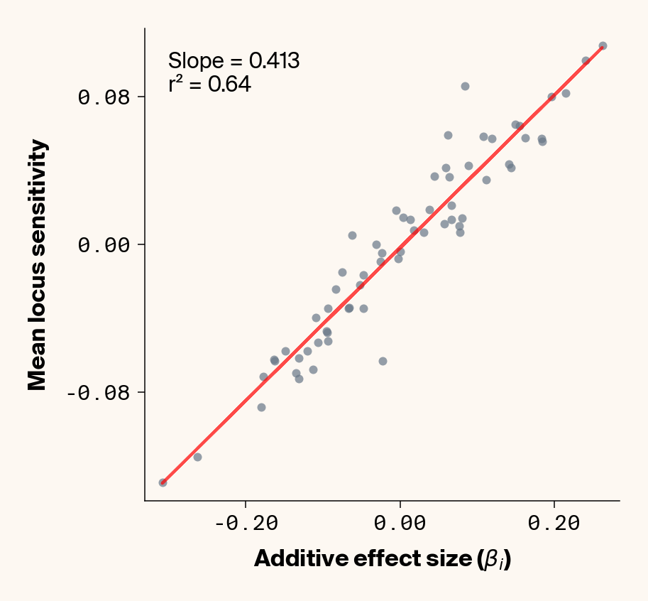
(a) Phenotype 1
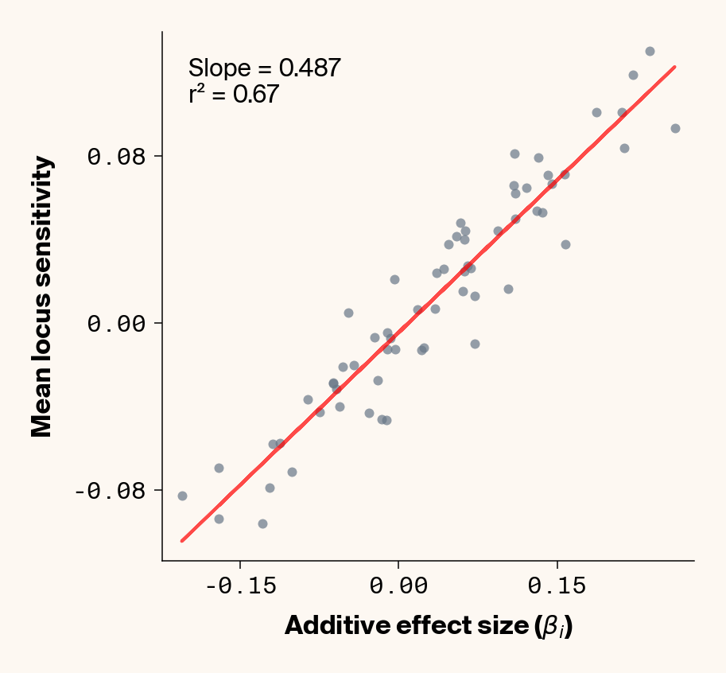
(b) Phenotype 2
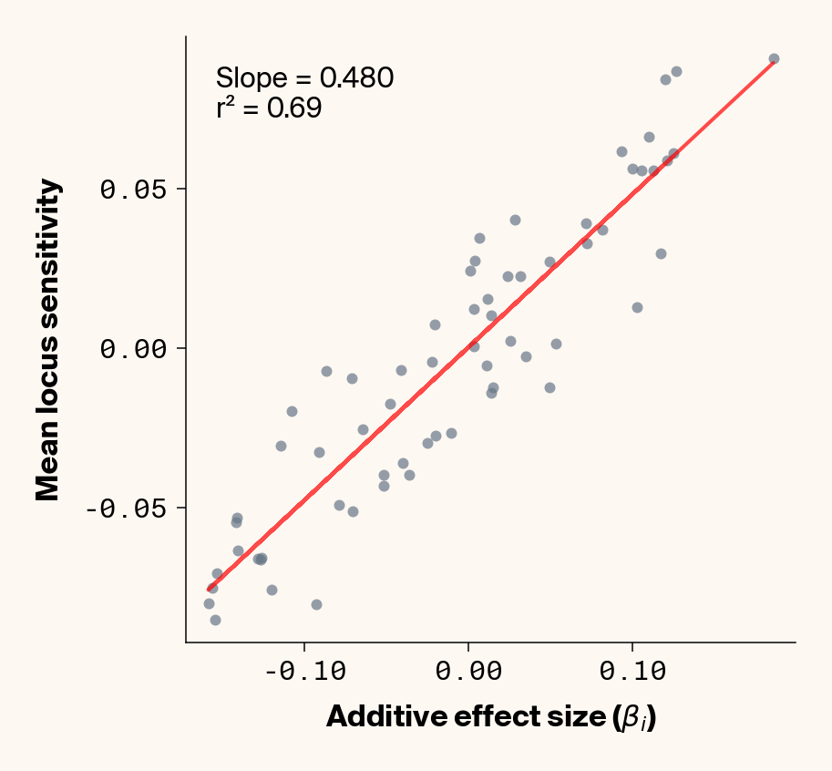
(c) Phenotype 3
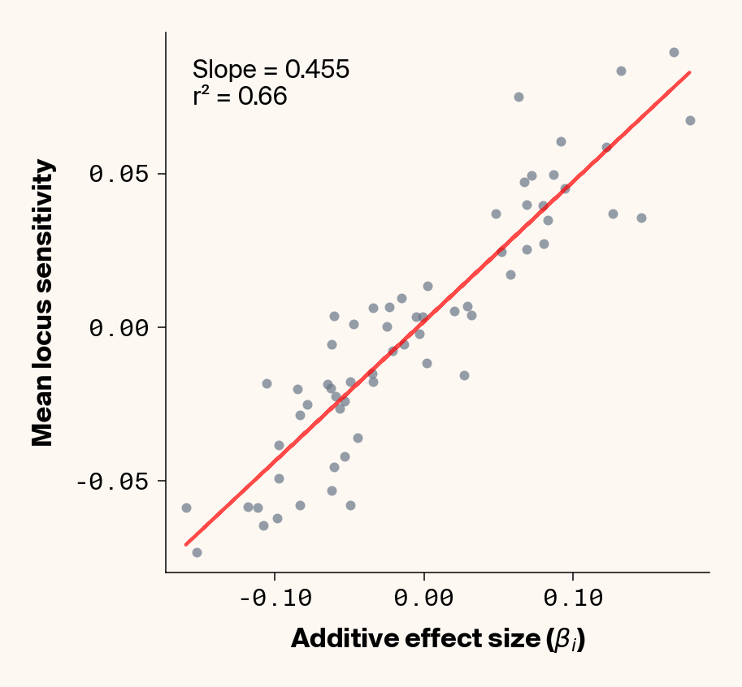
(d) Phenotype 4
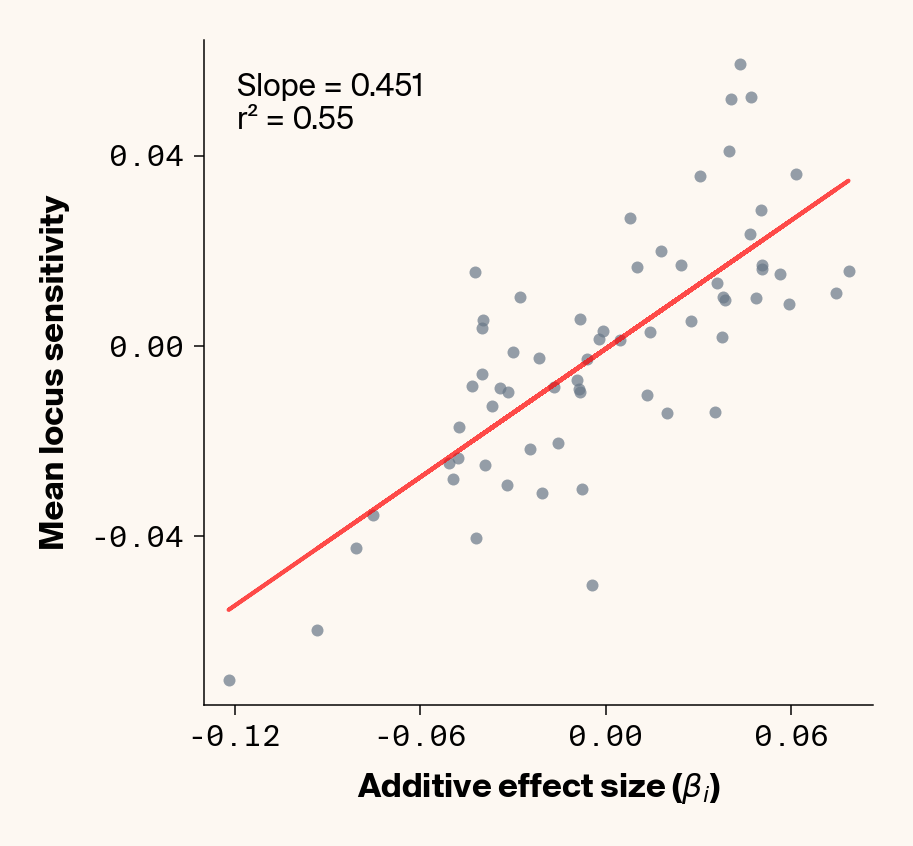
(e) Phenotype 5
Figure 7: Ground truth locus additive effect size plotted against mean locus sensitivity value for test-set samples with added environmental noise. Results presented for 5 phenotypes (a-e) ranging from purely additive (a) to almost purely epistatic (e).
While the fit isn’t quite as clean as before, the results actually still look quite good (Figure 7), so for the most part, ELM looks to be quite capable of extracting ground truth additive effect sizes from this noisy data. It’s interesting to note that the slope on the fit of ground truth to average locus sensitivity, though, which tends to be ~0.45, is considerably lower than the 1:1 expectation, which was previously matched in the main analysis. It seems that we’re again finding the effects of regularisation in this noisier phenotypic regime.
What about epistatic effects? First, let’s look at the variance in locus sensitivity to see if we get the same parabola shapes as before.
Figure 8: Ground truth locus epistatic effect size plotted against variance in locus sensitivity value for test-set samples with added environmental noise. Results presented for 5 phenotypes (a-e) ranging from purely additive (a) to almost purely epistatic (e).
We observe a fairly noisy fit between locus sensitivity variance and ground truth epistasis (for phenotypes with epistasis), particularly for phenotypes with low epistatic variance (Figure 8). Again, we observe fairly intense regularization as the polynomial term is scaled well below the 1:1 expectation. This suggests that the variance in sensitivity values might suffer in noisy phenotype regimes.
But, what about pairwise epistatic effects? Let’s compare all possible pairs of loci and manipulate their genotype-specific sensitivities to estimate \(\beta_{ij}\).
Estimate epistatic effect size between all pairs of loci
# these functions looping over all pairs of loci will take ~2-3min to run on CPU# calculate genotype specific sensitivity means for all possible pairs of locipaired_all_hnew = extract_all_epistatic_pairs( model_H05, test_loader_gp_hnew, true_eff, phenotype_idx=[1, 2, 3, 4, 5], device=device, max_samples=2000,)# estimate quant-gen parametersqg_estimates_hnew = estimate_effects_from_sensitivities( paired_all_hnew, heritability=new_heritability)
Analyzing phenotypes: [1, 2, 3, 4, 5]
Generated 2016 total locus pairs for phenotype 1, 0 with known epistatic effects
Generated 2016 total locus pairs for phenotype 2, 32 with known epistatic effects
Generated 2016 total locus pairs for phenotype 3, 32 with known epistatic effects
Generated 2016 total locus pairs for phenotype 4, 32 with known epistatic effects
Generated 2016 total locus pairs for phenotype 5, 32 with known epistatic effects
Processed 1000 samples
Using heritability scaling factor: 0.5000 (h² = 0.25)
Plot epistatic effect size between all pairs of loci
# plot estimates vs. ground truthplot_epistatic_estimates(qg_estimates_hnew)
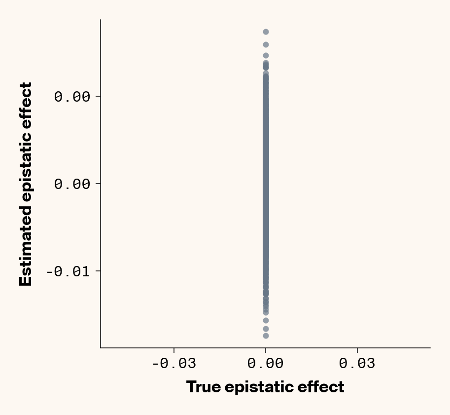
(a) Phenotype 1
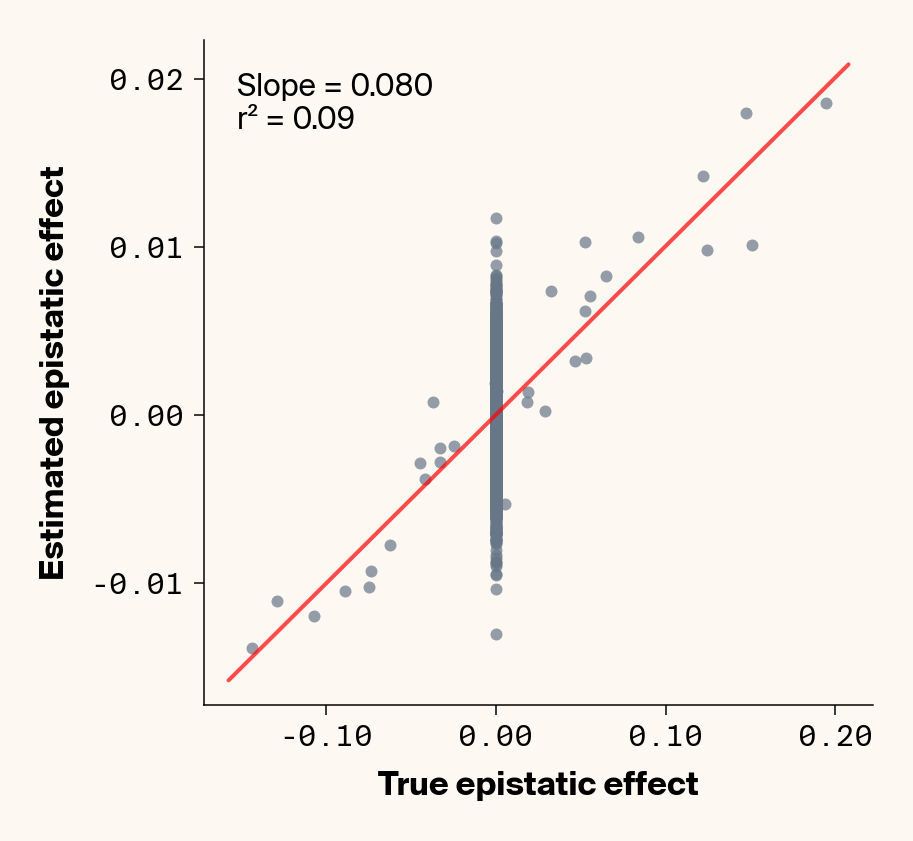
(b) Phenotype 2
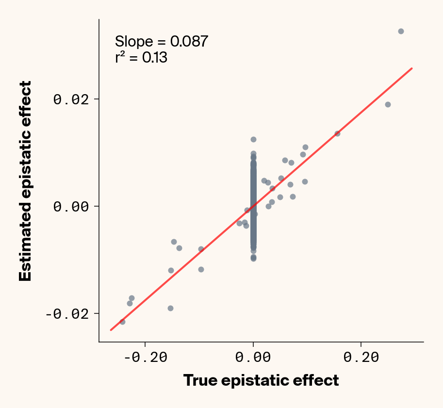
(c) Phenotype 3
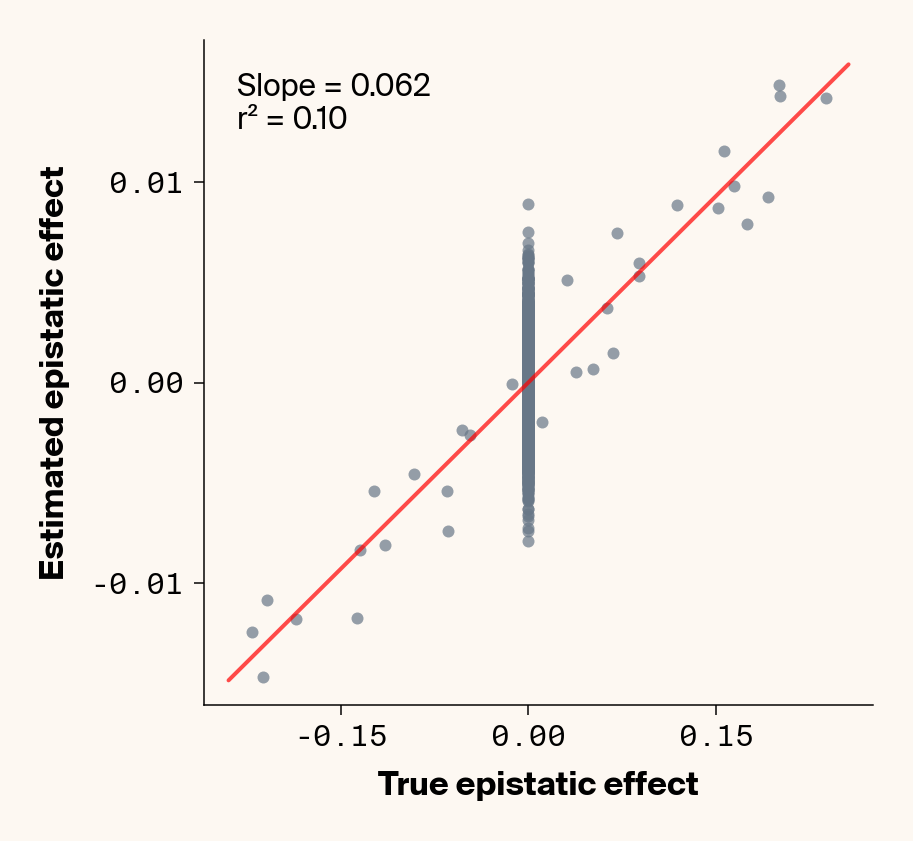
(d) Phenotype 4
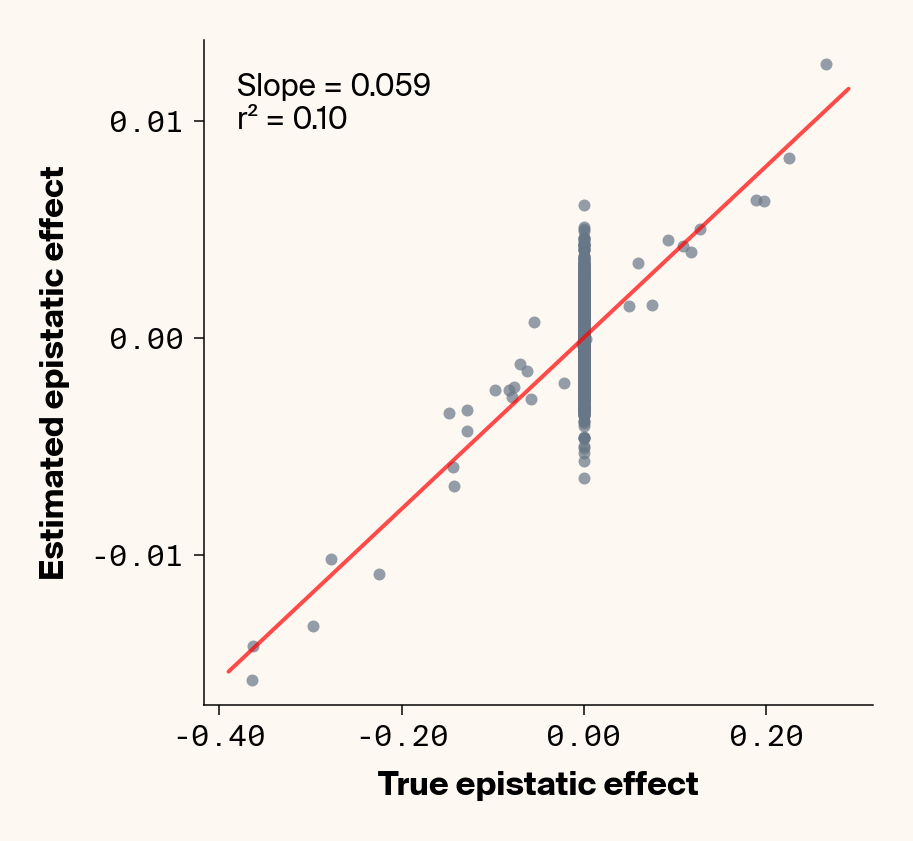
(e) Phenotype 5
Figure 9: Ground truth epistatic interaction terms plotted against epistatic terms estimated from paired genotype-specific locus sensitivity shifts. Points shown for all possible pairs of loci. Locus pairs with no interaction have a ground truth epistatic term set to 0. Environmental noise added to phenotypes. Results presented for 5 phenotypes (a-e) ranging from purely additive (a) to almost purely epistatic (e).
Once more, we recover a very good fit between ground truth pairwise epistatic terms and estimates from ELM (Figure 9), albeit with a stronger underestimate of absolute effect sizes (again, regularization). In fact, the main effect of adding noise seems not to be to lower the model’s ability to learn the relative ranks of epistatic terms, but rather to inflate the false positive epistatic variance terms. Focusing on phenotype 2, where we previously noted that predictive performance suggested no epistasis had been learned, there’s a very clean relationship between ground truth and learned epistatic couplings that seems to be masked by noise from false positive interactions. This might explain why this phenotype had an \(r^2\) lower than \(h^2\). This is a particularly promising result, as it implies that we might be able to extract information on epistatic interactions even in cases where predictive performance suggests that epistasis hasn’t been learned. One way we can do that is by fitting multiple independent replicates of our neural network, estimating epistatic coefficients using ELM, and then averaging the results. This approach should work well if the noise from false positive epistatic interactions is more stochastic than the signal learned from genuine interactions. Below, we show an attempt at this with 25 replicate runs.
Function to run replicates of ELM analysis
def run_epistasis_replicates( n_replicates, base_file_name, true_eff, phenotype_idx=None, heritability=1.0, hidden_size=1024, learning_rate=0.001, regularization=1, max_samples=2000, device=device, verbose=False,):""" Run epistasis interaction estimation across multiple model replicates. Args: n_replicates: Number of training replicates to run base_file_name: Base path for HDF5 files true_eff: DataFrame with true effects phenotype_idx: List of phenotype indices (1-based) heritability: Heritability for data generation hidden_size: Hidden layer size for neural network learning_rate: Learning rate for training regularization: Weight decay for training max_samples: Max samples for epistasis analysis device: Device to run on verbose: Whether to print progress Returns: dict: Contains replicate results and aggregated estimates """if phenotype_idx isNone: phenotype_idx = [1, 2, 3, 4, 5]print(f"Starting {n_replicates} replicates of epistasis analysis...")print(f"Phenotypes: {phenotype_idx}, Heritability: {heritability}")# Storage for all replicate results all_qg_estimates = []for rep inrange(n_replicates):if verbose:print(f"\n=== Replicate {rep +1}/{n_replicates} ===")# Create data loaders with different seed for each replicate loaders = create_data_loaders_with_heritability( base_file_name, heritability=heritability, seed=42+ rep ) train_loader_gp = loaders["train_loader_gp"] test_loader_gp = loaders["test_loader_gp"]# Initialize and train model model = GP_net(n_loci=n_loci, hidden_layer_size=hidden_size, n_pheno=n_phen)print(f"Training model for replicate {rep +1}...") model, best_loss = train_gpnet( model=model, train_loader=train_loader_gp, test_loader=test_loader_gp, n_loci=n_loci, verbose=False, learning_rate=learning_rate, weight_decay=regularization, device=device, )if verbose:print(f"Model trained. Best loss: {best_loss:.6f}")# Extract all epistatic pairsif verbose:print("Extracting epistatic pairs...") paired_all = extract_all_epistatic_pairs( model, test_loader_gp, true_eff, verbose=False, phenotype_idx=phenotype_idx, device=device, max_samples=max_samples, ) qg_estimates = estimate_effects_from_sensitivities( paired_all, heritability=heritability, verbose=False, )# Add replicate identifier qg_estimates["replicate"] = rep +1 all_qg_estimates.append(qg_estimates)if verbose:# Quick summary stats for this replicate epi_pairs = qg_estimates[qg_estimates["true_epi_eff"] !=0]iflen(epi_pairs) >0: corr = np.corrcoef(epi_pairs["scaled_true_epi_eff"], epi_pairs["est_epi_eff"])[0, 1]print(f" Epistatic correlation: {corr:.3f}")# Combine all replicates combined_results = pd.concat(all_qg_estimates, ignore_index=True)if verbose:print(f"\n=== Aggregating across {n_replicates} replicates ===")# Calculate mean estimates across replicates for each locus pair group_cols = ["phenotype", "phenotype_idx", "locus1", "locus2"]# Get mean estimates mean_estimates = ( combined_results.groupby(group_cols) .agg( {"true_add_eff1": "first","true_add_eff2": "first","true_epi_eff": "first","scaled_true_add_eff1": "first","scaled_true_add_eff2": "first","scaled_true_epi_eff": "first","est_add_eff1": "mean","est_add_eff2": "mean","est_epi_eff": "mean","heritability": "first","encoding_type": "first", } ) .reset_index() )# Get standard deviations std_estimates = ( combined_results.groupby(group_cols) .agg({"est_add_eff1": "std", "est_add_eff2": "std", "est_epi_eff": "std"}) .reset_index() )# Rename std columns std_estimates.columns = [ col if col in group_cols elsef"std_{col}"for col in std_estimates.columns ]# Merge means and stds final_estimates = mean_estimates.merge(std_estimates, on=group_cols) final_estimates["n_replicates"] = n_replicatesif verbose:print(f"Final results: {len(final_estimates)} unique locus pairs")# Overall correlation for epistatic effects epi_pairs = final_estimates[final_estimates["true_epi_eff"] !=0]iflen(epi_pairs) >0: overall_corr = np.corrcoef(epi_pairs["scaled_true_epi_eff"], epi_pairs["est_epi_eff"])[0, 1 ]print(f"Overall epistatic correlation: {overall_corr:.3f}")# Show correlation by phenotypefor pheno in epi_pairs["phenotype"].unique(): pheno_data = epi_pairs[epi_pairs["phenotype"] == pheno]iflen(pheno_data) >1: pheno_corr = np.corrcoef( pheno_data["scaled_true_epi_eff"], pheno_data["est_epi_eff"] )[0, 1]print(f" {pheno}: r = {pheno_corr:.3f}")return {"all_replicates": all_qg_estimates,"combined_results": combined_results,"mean_estimates": final_estimates,"n_replicates": n_replicates,"phenotype_idx": phenotype_idx,"heritability": heritability, }
Run epistasis analysis across 25 replicates
# note this will take ~45min to run on CPU (25 reps in our study), more if you increase the replicate #epistasis_rep_results = run_epistasis_replicates( n_replicates=25, base_file_name=base_file_name, true_eff=true_eff, phenotype_idx=[1, 2, 3, 4, 5], heritability=new_heritability, hidden_size=hidden_size, learning_rate=learning_rate, regularization=regularization, max_samples=2000, device=device, verbose=False,)
Starting 25 replicates of epistasis analysis...
Phenotypes: [1, 2, 3, 4, 5], Heritability: 0.25
Training model for replicate 1...
Training model for replicate 2...
Training model for replicate 3...
Training model for replicate 4...
Training model for replicate 5...
Training model for replicate 6...
Training model for replicate 7...
Training model for replicate 8...
Training model for replicate 9...
Training model for replicate 10...
Training model for replicate 11...
Training model for replicate 12...
Training model for replicate 13...
Training model for replicate 14...
Training model for replicate 15...
Training model for replicate 16...
Training model for replicate 17...
Training model for replicate 18...
Training model for replicate 19...
Training model for replicate 20...
Training model for replicate 21...
Training model for replicate 22...
Training model for replicate 23...
Training model for replicate 24...
Training model for replicate 25...
Plot epistasis estimates pooled over analysis replicates
def plot_replicate_epistasis_estimates(results, show_error_bars=False):""" Plot mean epistatic estimates across replicates vs true effects. Args: results: Output from run_epistasis_replicates show_error_bars: Whether to show error bars from replicate variation """ mean_estimates = results["mean_estimates"]# n_replicates = results["n_replicates"] unique_phenotypes = mean_estimates["phenotype"].unique()for _, phenotype inenumerate(unique_phenotypes):with mpl.rc_context(plot_style): plt.figure(figsize=(6, 6)) phenotype_data = mean_estimates[mean_estimates["phenotype"] == phenotype]if show_error_bars and"std_est_epi_eff"in phenotype_data.columns: plt.errorbar( phenotype_data["scaled_true_epi_eff"], phenotype_data["est_epi_eff"], yerr=phenotype_data["std_est_epi_eff"], fmt="o", alpha=0.7, capsize=3, color=apc.steel, )else: plt.scatter( phenotype_data["scaled_true_epi_eff"], phenotype_data["est_epi_eff"], alpha=0.7, color=apc.steel, )# Add best fit line and slope (skip for Phenotype_1 as in original)if phenotype !="Phenotype_1"andlen(phenotype_data) >1: z = np.polyfit( phenotype_data["scaled_true_epi_eff"], phenotype_data["est_epi_eff"], 1 ) p = np.poly1d(z) xlims = plt.xlim() x_smooth = np.linspace(xlims[0], xlims[1], 100) plt.plot(x_smooth, p(x_smooth), "r-", alpha=0.7, linewidth=2) slope = z[0] r2 = r2_score(phenotype_data["scaled_true_epi_eff"], phenotype_data["est_epi_eff"]) plt.text(0.05,0.95,f"Slope = {slope:.3f}\nr² = {r2:.2f}", transform=plt.gca().transAxes, verticalalignment="top", fontsize=15, bbox=dict( boxstyle="round", facecolor=apc.parchment, alpha=0.7, edgecolor="none" ), ) plt.xlabel("True Epistatic Effect (scaled)", fontsize=16) plt.ylabel("Estimated Epistatic Effect", fontsize=16)# Get current axes for formatting ax = plt.gca() ax.xaxis.set_major_locator(MaxNLocator(4)) ax.yaxis.set_major_locator(MaxNLocator(4)) ax.xaxis.set_major_formatter(FormatStrFormatter("%.2f")) ax.yaxis.set_major_formatter(FormatStrFormatter("%.2f")) plt.tight_layout(pad=0.5) apc.mpl.style_plot(monospaced_axes="both") plt.show()plot_replicate_epistasis_estimates(epistasis_rep_results)
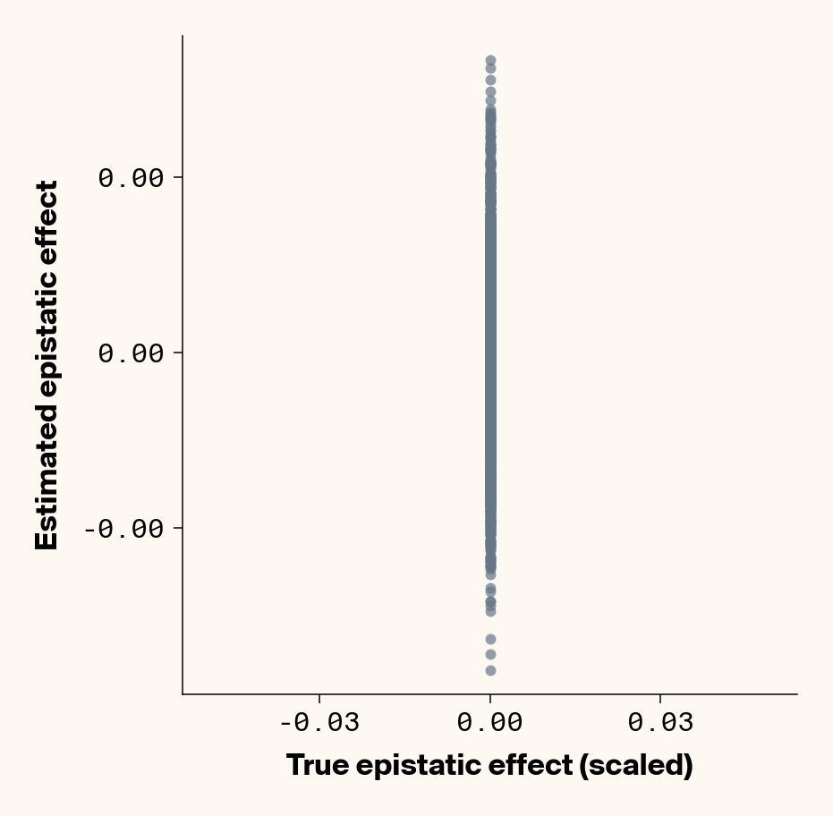
(a) Phenotype 1
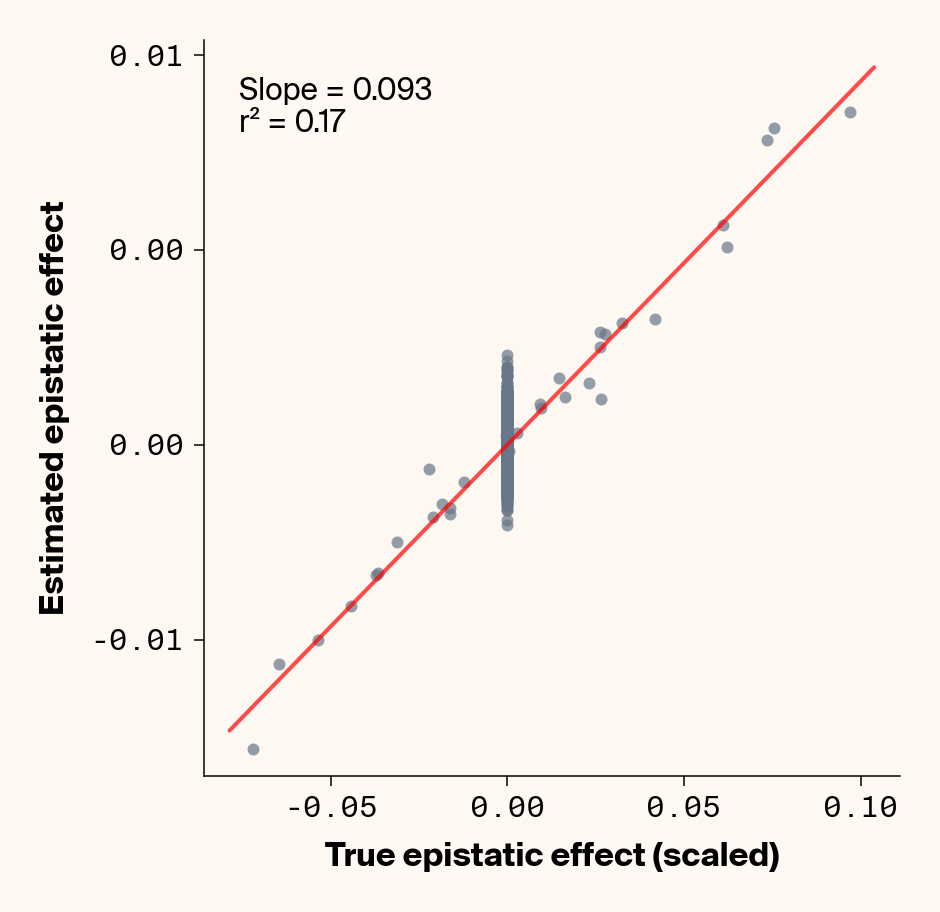
(b) Phenotype 2
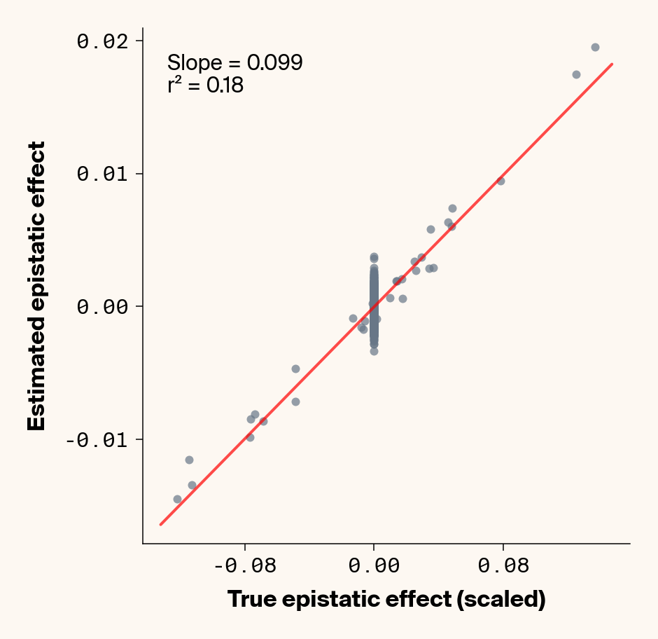
(c) Phenotype 3
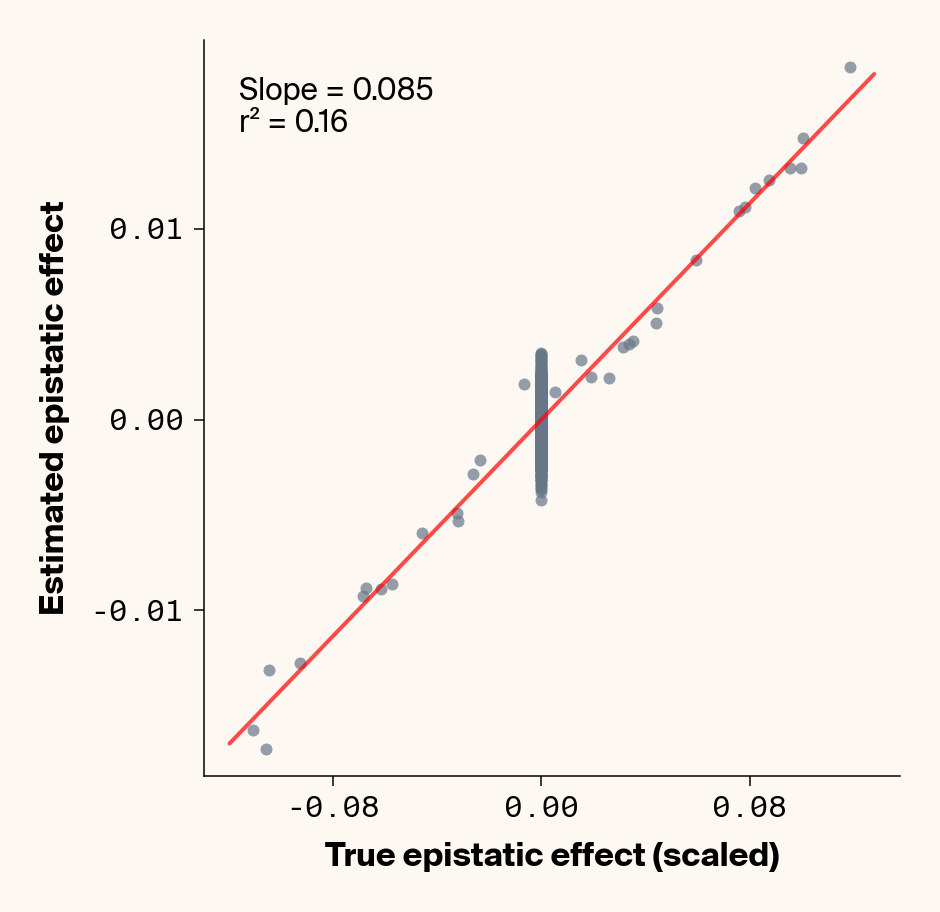
(d) Phenotype 4
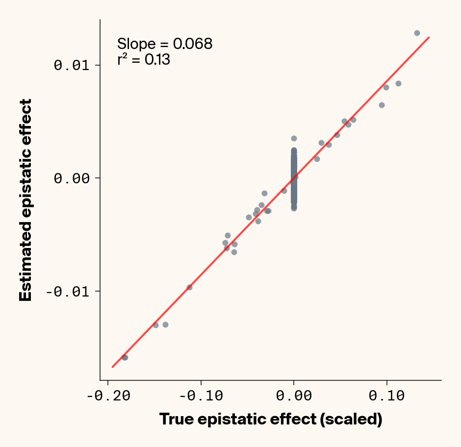
(e) Phenotype 5
Figure 10: Ground truth epistatic interaction terms plotted against epistatic terms estimated from paired genotype specific locus sensitivity shifts. Points shown for all possible pairs of loci. Epistatic terms estimated by averaging results from 25 replicates of model fitting. Environmental noise added to phenotypes. Results presented for 5 phenotypes (a-e) ranging from purely additive (a) to almost purely epistatic (e).
Sure enough, adding model replicates neatly cleans up the epistatic results, both by shrinking the false positives to 0 and by better fitting the true interactions (Figure 10). We can probably push this result to be even cleaner with more replicates. This validates our intuition about extracting epistatic signal from noise by averaging, and implies we might be able to learn about epistasis under a variety of model performance conditions.
References
Adams E, Bai L, Lee M, Yu Y, AlQuraishi M. (2025). From MechanisticInterpretability to MechanisticBiology: Training, Evaluating, and InterpretingSparseAutoencoders on ProteinLanguageModels. https://doi.org/10.1101/2025.02.06.636901
Bricken T, Templeton A, Batson J, Chen B, Jermyn A, Conerly T, Turner N, Anil C, Denison C, Askell A, Lasenby R, Wu Y, Kravec S, Schiefer N, Maxwell T, Joseph N, Hatfield-Dodds Z, Tamkin A, Nguyen K, McLean B, Burke JE, Hume T, Carter S, Henighan T, Olah C. (2023). Towards monosemanticity: Decomposing language models with dictionary learning
Elhage N, Nanda N, Olsson C, Henighan T, Joseph N, Mann B, Askell A, Bai Y, Chen A, Conerly T, DasSarma N, Drain D, Ganguli D, Hatfield-Dodds Z, Hernandez D, Jones A, Kernion J, Lovitt L, Ndousse K, Amodei D, Brown T, Clark J, Kaplan J, McCandlish S, Olah C. (2021). A mathematical framework for transformer circuits
Sigurdsson AI, Louloudis I, Banasik K, Westergaard D, Winther O, Lund O, Ostrowski SR, Erikstrup C, Pedersen OBV, Nyegaard M, DBDS Genomic Consortium, Brunak S, Vilhjálmsson BJ, Rasmussen S. (2023). Deep integrative models for large-scale human genomics. https://doi.org/10.1093/nar/gkad373
Tucker SL, Dohleman FG, Grapov D, Flagel L, Yang S, Wegener KM, Kosola K, Swarup S, Rapp RA, Bedair M, Halls SC, Glenn KC, Hall MA, Allen E, Rice EA. (2020). Evaluating maize phenotypic variance, heritability, and yield relationships at multiple biological scales across agronomically relevant environments. https://doi.org/10.1111/pce.13681
Wang S, Mohamed A-R, Caruana R, Bilmes J, Plilipose M, Richardson M, Geras K, Urban G, Aslan O. (2016). Analysis of deep neural networks with the extended data jacobian matrix
York R, Kiefl E, Bigge BM, McGeever E. (2025). Cross-trait learning with a canonical transformer tops custom attention in genotype–phenotype mapping. https://doi.org/10.57844/arcadia-bmb9-fzxd
Zeng S, Mao Z, Ren Y, Wang D, Xu D, Joshi T. (2021). G2PDeep: A web-based deep-learning framework for quantitative phenotype prediction and discovery of genomic markers. https://doi.org/10.1093/nar/gkab407